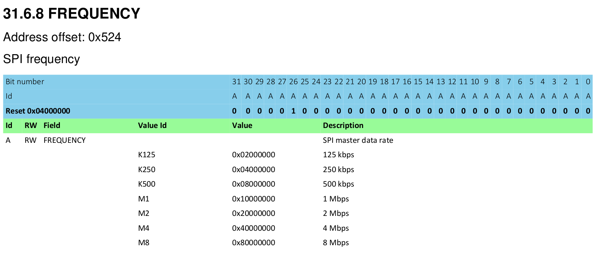

引言
欢迎阅读嵌入式Rust:一本关于如何在裸机(比如，微处理器)上使用Rust编程语言的入门书籍。
嵌入式Rust是为谁准备的
嵌入式Rust是为了那些既想要进行嵌入式编程，又想要使用Rust语言所提供的高级概念和安全保障的人们而准备的(参见Who Rust Is For)
本书范围
这本书的目的是：
- 让开发者快速上手Rust嵌入式开发，比如，如何设置一个开发环境。
- 分享那些关于使用Rust进行嵌入式开发的，现存的，最好的实践经验，比如，如何最大程度上地利用好Rust语言的特性去写更正确的嵌入式软件
- 某种程度下作为工具书，比如，如何在一个项目里将C和Rust混合在一起使用
虽然尽可能地尝试让这本书可以用于大多数场景，但是为了使读者和作者更容易理解，在所有的示例中，这本书都使用了ARM Cortex-M架构。然而，这本书并不需要读者熟悉这个架构，书中会在需要时对这个架构的特定细节进行解释。
这本书是为谁准备的
这本书适合那些有一些嵌入式背景或者有Rust背景的人，然而我相信每一个对Rust嵌入式编程好奇的人都能从这本书中获得某些收获。对于那些先前没有任何经验的人，我们建议你读一下“要求和预备知识”部分。从其它资料中获取、补充缺失的知识，这样能提高你的阅读体验。你可以看看“其它资源”部分，以找到你感兴趣的那些主题的资源。
要求和预备知识
- 你可以轻松地使用Rust编程语言，且在一个桌面环境上写过，运行过，调试过Rust应用。你应该也要熟悉2018 edition的术语，因为这本书是面向Rust 2018的。
- 你可以轻松地使用其它语言，比如C，C++或者Ada，开发和调试嵌入式系统，且熟悉如下的概念：
- 交叉编译
- 存储映射的外设（Memory Mapped Peripherals）
- 中断
- I2C，SPI，串口等等常见的接口
其它资源
如果你还不熟悉上面提到的东西或者你对这本书中提到的某个特定主题感兴趣，你也许能从这些资源中找到有用的信息。
| 主题 | 资源 | 描述 |
|---|---|---|
| Rust | Rust Book | 如果你还不熟悉Rust，我们强烈建议你读这本书． |
| Rust, Embedded | Discovery Book | 如果你从没做过嵌入式编程，这本书可能是个更好的开端． |
| Rust, Embedded | Embedded Rust Bookshelf | 在这里，你可以找到由Rust的嵌入式工作组提供的许多其它资源． |
| Rust, Embedded | Embedonomicon | 用Rust进行嵌入式编程的细节． |
| Rust, Embedded | embedded FAQ | Rust在嵌入式上下文中遇到的常见问题． |
| Rust, Embedded | Comprehensive Rust 🦀: Bare Metal | 用于一天课时的裸机Rust开发课程的教学资料． |
| Interrupts | Interrupt | - |
| Memory-mapped IO/Peripherals | Memory-mapped I/O | - |
| SPI, UART, RS232, USB, I2C, TTL | Stack Exchange about SPI, UART, and other interfaces | - |
翻译
这本书是已经被一些慷慨的志愿者们翻译了。如果你想要将你的翻译列在这里，请打开一个PR去添加它。
-
日文 (repository)
-
中文 (repository)
如何使用这本书
这本书通常假设你是按顺序阅读的。之后的章节是建立在先前的章节中提到的概念之上的，先前章节可能不会深入一个主题的细节，因为在随后的章节将会再次重温这个主题。 在大多数示例中这本书将使用STM32F3DISCOVERY开发板。这个板子是基于ARM Cortex-M架构的，且基本功能与大多数基于这个架构的CPUs功能相似。微处理器的外设和其它实现细节在不同的厂家之间是不同的，甚至来自同一个厂家，不同处理器系列之间也是不同的。 因此我们建议购买STM32F3DISCOVERY开发板来尝试这本书中的例子。
贡献
这本书的工作主要在这个仓库里管理，且主要由resouces team开发。
如果你按着这本书的操作遇到了什么麻烦，或者这本书的一些部分不够清楚，或者很难进行下去，那这本书就是有个bug，这个bug应该被报道给这本书的the issue tracker 。
修改拼写错误和添加新内容的Pull requests非常欢迎！
二次使用这个材料
这本书根据以下许可证发布:
- 本书中包含的代码示例和独立的Cargo项目均根据MIT License和Apache License v2.0发放许可的。
- 本书中包含的文档，图片和表格均根据CC-BY-SA v4.0发放许可的。
总之：如果你想在你的工作中使用我们的文档或者图片，你需要：
- 提供合适的授信 (i.e. 在你的幻灯片中提到本书，提供相关页面的连接)
- 提供CC-BY-SA v4.0的许可证的链接
- 指出你是否改变了材料的内容，在同一个许可证下，可以对材料进行任何改变
也请告诉我这本书对你是否有帮助！
熟悉你的硬件
先来熟悉下我们要用的硬件。
STM32F3DISCOVERY (the "F3")

这个板子有什么？
-
一个STM32F303VCT6微控制器。这个微控制器包含
- 一个单核的ARM Cortex-M4F 处理器，支持单精度浮点运算，72MHz的最大时钟频率。
- 256 KiB的"Flash"存储。
- 48 KiB的RAM
- 多种多样的外设，比如计时器，I2C，SPI和USART
- 通用GPIO和在板子两侧的其它类型的引脚
- 一个写着“USB USER”的USB接口
-
一个位于LSM303DLHC芯片上的加速度计。
-
一个位于LSM303DLHC芯片上的磁力计。
-
8个摆得像一个指南针形状的user LEDs。
-
一个二级微控制器: STM32F103。这个微控制器实际上是一个板载编程器/调试器的一部分，与名为“USB ST-LINK”的USB端口相连。
关于所列举的功能的更多细节和开发板的更多规格请查阅STMicroelectronics网站。
提醒一句: 如果想要为板子提供外部信号，请小心。微控制器STM32F303VCT6管脚的标称电压是3.3伏。更多信息请查看6.2 Absolute maximum ratings section in the manual。
一个 no_std Rust环境
嵌入式编程这个词被广泛用于许多不同的编程场景中。小到RAM和ROM只有KB的8位机(像是ST72325xx)，大到一个具有32/64位4核Cortex-A53和1GB RAM的系统，比如树莓派(Model B 3+)。当编写代码时，取决于你的目标环境和用例，将会有不同的限制和局限。
通常嵌入式编程有两类:
主机环境下
这类环境与一个常见的PC环境类似。意味着向你提供了一个系统接口比如 POSIX，使你能和不同的系统进行交互，比如文件系统，网络，内存管理，进程，等等。标准库相应地依赖这些接口去实现了它们的功能。可能有某种sysroot并限制了对RAM/ROM的使用，可能还有一些特别的硬件或者I/O。总之感觉像是在专用的PC环境上编程一样。
裸机环境下
在一个裸机环境中，程序被加载前，环境中不存在代码。没有系统提供的软件，我们不能加载标准库。相反地，程序和它使用的crates只能使用硬件(裸机)去运行。使用no-std可以防止rust读取标准库。标准库中与平台无关的部分在libcore中。libcore剔除了那些在一个嵌入式环境中非必要的东西。比如用于动态分配的内存分配器。如果你需要这些或者其它的某些功能，通常会有提供这些功能的crates。
libstd运行时
就像之前提到的，使用libstd需要一些系统集成，这不仅仅是因为libstd使用了一个公共的方法访问操作系统，它也提供了一个运行时环境。这个运行时环境，负责设置堆栈溢出保护，处理命令行参数，并在一个程序的主函数被激活前启动一个主线程。在一个no_std环境中，这个运行时环境也是不可用的。
总结
#![no_std]是一个crate层级的属性，它说明crate将连接至core-crate而不是std-crate。libcore crate是std crate的一个的子集，其与平台无关，它对程序将要运行的系统没有做要求。比如，它提供了像是floats，strings和切片的APIs，暴露了像是与原子操作和SIMD指令相关的处理器功能的APIs。然而，它缺少涉及到平台集成的那些APIs。由于这些特性，no_std和libcore代码可以用于任何引导程序(stage 0)像是bootloaders，固件或者内核。
概述
| 特性 | no_std | std |
|---|---|---|
| 堆 (dynamic memory) | * | ✓ |
| 容器 (Vec, BTreeMap, etc) | ** | ✓ |
| 栈溢出保护 | ✘ | ✓ |
| 在进入main之前运行的初始化代码 | ✘ | ✓ |
| libstd available | ✘ | ✓ |
| libcore available | ✓ | ✓ |
| 编写固件，内核，或者引导程序 | ✓ | ✘ |
* 只有在你使用了 alloc crate 并设置了一个适合的分配器后，比如alloc-cortex-m后可用．
** 只有在你使用了 collections crate 并配置了一个全局默认的分配器后可用．
** 由于缺少安全的随机数产生器，所以无法使用HashMap和HashSet．
参见
工具
与微控制器打交道需要使用几种不同的工具，因为我们要处理的架构与笔记本电脑不同，我们必须在 远程 设备上运行和调试程序。我们将使用下面列举出来的工具。当没有指定一个最小版本时，最新的版本应该也可以用，但是我们还是列出了我们已经测过的那些版本。
- Rust 1.31, 1.31-beta, 或者一个更新的，支持ARM Cortex-M编译的工具链。
cargo-binutils~0.1.4qemu-system-arm. 测试的版本: 3.0.0- OpenOCD >=0.8. 测试的版本: v0.9.0 and v0.10.0
- 有ARM支持的GDB。强烈建议7.12或者更新的版本。测试版本: 7.10, 7.11 和 8.1
cargo-generate或者git。这些工具都是可选的，但是跟着这本书来使用它们，会更容易。
下面的文档将解释我们为什么使用这些工具。安装指令可以在下一页找到。
cargo-generate 或者 git
裸机编程是非标准Rust编程，为了得到正确的程序的内存布局，需要对链接过程进行一些调整，这要求添加一些额外的文件(比如linker scripts)和配置(比如linker flags)。我们已经为你把这些打包进了一个模板里了，你只需要补充缺失的信息(比如项目名和目标硬件的特性)。
我们的模板兼容cargo-generate:一个用来从模板生成新的Cargo项目的Cargo子命令。你也能使用git,curl,wget,或者你的网页浏览器下载模板。
cargo-binutils
cargo-binutils是一个Cargo命令的子集，它让我们能轻松使用Rust工具链带来的LLVM工具。这些工具包括LLVM版本的objdump，nm和size，用来查看二进制文件。
在GNU binutils之上使用这些工具的好处是，(a)无论你的操作系统是什么，安装这些LLVM工具都可以用同一条命令(rustup component add llvm-tools-preview)。(b)像是objdump这样的工具，支持所有rustc支持的架构--从ARM到x86_64--因为它们都有一样的LLVM后端。
qemu-system-arm
QEMU是一个仿真器。在这个例子里，我们使用能完全仿真ARM系统的改良版QEMU。我们使用QEMU在主机上运行嵌入式程序。多亏了它，你可以在没有任何硬件的情况下，尝试这本书的部分示例。
用于调试嵌入式Rust的工具
概述
在Rust中调试嵌入式系统需要用到专业的工具，这包括用于管理调试进程的软件，用于观察和控制程序执行的调试器，和用于便捷主机和嵌入式设备之间进行交互的硬件探测器．这个文档会介绍像是Probe-rs和OpenOCD这样的基础软件，以及像是GDB和Probe-rs Visual Studio Code扩展这样常见的调试器．另外，该文档会覆盖像是Rusty-probe，ST-Link，J-Link，和MCU-Link这样的硬件探测器，它们整合在一起可以高效地对嵌入式设备进行调试和编程．
驱动调试工具的软件
Probe-rs
Probe-rs是一个现代化的，以Rust开发的软件，被设计用来配合嵌入式系统中的调试器一起工作．不像OpenOCD，Probe-rs设计的时候就考虑到了简单性，目标是减少在其它调试解决方案中常见的配置重担． 它支持不同的探测器和目标架构，提供一个用于与嵌入式硬件交互的高层接口．Probe-rs直接集成了Rust工具链，并且通过扩展集成进了Visual Studio Code中，允许开发者精简它们的调试工作流程．
OpenOCD (Open On-Chip Debugger)
OpenOCD是一个用于调试，测试，和编程嵌入式系统的开源软件工具．它提供了一个主机系统和嵌入式硬件之间的接口，支持不同的传输层，比如JTAG和SWD（Serial Wire Debug）．OpenOCD集成了GDB，其是一个调试器．OpenOCD受到了广泛的支持，拥有大量的文档和一个庞大的社区，但是配置可能会很复杂，特别是对于自定义的嵌入式设置．
Debuggers
调试器允许开发者观察和控制一个程序的执行，以辨别和纠正错误或者bugs．它提供像是设置断点，一行一行地步进代码，和研究变量的值以及内存的状态等功能．调试器本质上是为了通过软件开发和维护，使得开发者可以确保他们的代码的行为在不同环境下就像他们预期的那样运行．
调试器可以知道如何：
- 与映射到存储上的寄存器交互．
- 设置断点．
- 读取和写入映射到存储上的寄存器．
- 检测什么时候MCU因为一个调试时间被挂了起来．
- 在遇到一个调试事件后继续MCU的执行．
- 擦出和写入微控制器的FLASH．
Probe-rs Visual Studio Code Extension
Probe-rs有一个Visual Studio Code的扩展，提供了不需要额外设置的无缝的调试体验．通过它的帮助，开发者可以使用Rust特定的特性，像是漂亮的打印和详细的错误信息，确保它们的调试过程可以与Rust的生态对齐．
GDB (GNU Debugger)
GDB是一个多用途的调试工具，其允许开发者研究程序的状态，无论其正在运行中还是程序崩溃后．对于嵌入式Rust，GDB通过OpenOCD或者其它的调试服务器链接到目标系统上去和嵌入式代码交互．GDB是高度可配置的，并且支持像是远程调试，变量检测，和条件断点．它可以被用于多个平台，并对Rust特定的调试需求有广泛的支持，比如好看的打印和与IDEs集成．
探测器
硬件探头是一个被用于嵌入式系统的开发和调试的设备，其可以使得主机和目标嵌入式设备间的通信变得简单．它通常支持像是JTAG或者SWD这样的协议，可以编程，调试和分析嵌入式系统上的微控制器或者微处理器．硬件探头对于要设置断点，步进代码，和观察内存与处理器的寄存器的开发者来说很重要，可以让开发者们高效地实时地分析和修复问题．
Rusty-probe
Rusty-probe是一个开源的基于USB的硬件调试探测器，被设计用来辅助probe-rs一起工作．Rusy-Probe和probe-rs的结合为嵌入式Rust应用的开发者提供了一个易用的，成本高效的解决方案．
ST-Link
ST-Link是一个由STMicroelectronics开发的常见的调试和编程探测器，其主要用于它们的STM32和STM8微控制器系列．它支持通过JTAG或者SWD接口进行调试和编程．因为STMicroelectronics的大量的开发板对其直接支持并且它集成进了主流的IDEs中，所以使得它成为使用STM微控制器的开发者的首选．
J-Link
J-Link是由SEGGER微控制器开发的，它是一个鲁棒和功能丰富的调试器，其支持大量的CPU内核和设备，不仅仅是ARM，比如RISC-V．因其高性能和可读性而闻名，J-Link支持不同的通信接口，包括JTAG，SWD，和fine-pitch JTAG接口．它因其高级的特性而受到欢迎，比如在flash存储中的无限的断点和它与多种开发环境的兼容性．
MCU-Link
MCU-Link是一个调试探测器，也可以作为编程器使用，由NXP Semiconductors提供．它支持不同的ARM Cortex微控制器且可以与像是MCUXpresso IDE这样的开发工具进行无缝地交互．MCU-Link因其丰富的功能和易使用而闻名，使它成为像是爱好者，教育者，和专业的开发者们的可行的选项．
安装工具
这一页包含的工具安装指令与操作系统无关：
Rust 工具链
跟着https://rustup.rs的指令安装rustup。
注意 确保你的编译器版本等于或者大于1.31版本。rustc -V应该返回一个比下列日期更新的日期。
$ rustc -V
rustc 1.31.1 (b6c32da9b 2018-12-18)
考虑到带宽和磁盘的使用量，默认的安装只支持主机环境的编译。为了添加对ARM Cortex-M架构交叉编译的支持，从下列编译目标中选择一个。对于这本书里使用的STM32F3DISCOVERY板子，使用thumbv7em-none-eabihf作为目标。
Cortex-M0, M0+, 和 M1 (ARMv6-M 架构):
rustup target add thumbv6m-none-eabi
Cortex-M3 (ARMv7-M 架构):
rustup target add thumbv7m-none-eabi
没有硬件浮点单元的Cortex-M4和M7 (ARMv7E-M架构)
rustup target add thumbv7em-none-eabi
具有硬件浮点单元的Cortex-M4F和M7F (ARMv7E-M架构)
rustup target add thumbv7em-none-eabihf
Cortex-M23 (ARMv8-M架构):
rustup target add thumbv8m.base-none-eabi
Cortex-M33和M35P (ARMv8-M架构):
rustup target add thumbv8m.main-none-eabi
具有硬件浮点单元的Cortex-M33F和M35PF (ARMv8-M架构):
rustup target add thumbv8m.main-none-eabihf
cargo-binutils
cargo install cargo-binutils
rustup component add llvm-tools-preview
WINDOWS: 需要预先安装 C++ Build Tools for Visual Studio 2019。https://visualstudio.microsoft.com/thank-you-downloading-visual-studio/?sku=BuildTools&rel=16
cargo-generate
我们随后将使用这个来从模板生成一个项目。
cargo install cargo-generate
注意:在某些Linux发行版上(e.g. Ubuntu) 在安装cargo-generate之前，你可能需要安装libssl-dev和pkg-config
特定于操作系统的指令
现在根据你使用的操作系统，来执行对应的指令:
Linux
这部分是在某些Linux发行版下的安装指令。
依赖包
- Ubuntu 18.04 或者更新的版本 / Debian stretch 或者更新的版本
注意
gdb-multiarch是你将用来调试你的ARM Cortex-M程序的GDB命令
sudo apt install gdb-multiarch openocd qemu-system-arm
- Ubuntu 14.04 and 16.04
注意
arm-none-eabi-gdb是你将用来调试你的ARM Cortex-M程序的GDB命令
sudo apt install gdb-arm-none-eabi openocd qemu-system-arm
- Fedora 27 或者更新的版本
sudo dnf install gdb openocd qemu-system-arm
- Arch Linux
注意
arm-none-eabi-gdb是你将用来调试你的ARM Cortex-M程序的GDB命令
sudo pacman -S arm-none-eabi-gdb qemu-system-arm openocd
udev 规则
这个规则可以让你在不使用超级用户权限的情况下，使用OpenOCD和Discovery开发板。
生成包含下列内容的 /etc/udev/rules.d/70-st-link.rules 文件
# STM32F3DISCOVERY rev A/B - ST-LINK/V2
ATTRS{idVendor}=="0483", ATTRS{idProduct}=="3748", TAG+="uaccess"
# STM32F3DISCOVERY rev C+ - ST-LINK/V2-1
ATTRS{idVendor}=="0483", ATTRS{idProduct}=="374b", TAG+="uaccess"
然后重新加载所有的udev规则
sudo udevadm control --reload-rules
如果你已经把开发板插入到笔记本中了，请拔下它然后再插上它。
你可以通过运行这个命令检查权限:
lsusb
终端可能有如下显示
(..)
Bus 001 Device 018: ID 0483:374b STMicroelectronics ST-LINK/V2.1
(..)
记住bus和device号，使用这些数字组合成一个像是 /dev/bus/usb/<bus>/<device> 这样的路径。然后像这样使用这个路径:
ls -l /dev/bus/usb/001/018
crw-------+ 1 root root 189, 17 Sep 13 12:34 /dev/bus/usb/001/018
getfacl /dev/bus/usb/001/018 | grep user
user::rw-
user:you:rw-
权限后的 + 指出存在一个扩展权限。getfacl 命令显示，user也就是你，可以使用这个设备。
现在，去往下个章节.
macOS
所有的工具都可以使用Homebrew或者MacPorts来安装：
使用Homebrew安装工具
$ # GDB
$ brew install armmbed/formulae/arm-none-eabi-gcc
$ # OpenOCD
$ brew install openocd
$ # QEMU
$ brew install qemu
注意 如果OpenOCD崩溃了，你可能需要用以下方法安装最新版本:
$ brew install --HEAD openocd
使用MacPorts安装工具
$ # GDB
$ sudo port install arm-none-eabi-gcc
$ # OpenOCD
$ sudo port install openocd
$ # QEMU
$ sudo port install qemu
这是全部内容，请转入下个章节．
Windows
arm-none-eabi-gdb
ARM提供了用于Windows的.exe安装程序。从这里获取, 然后按照说明操作。
在完成安装之前，勾选/选择"Add path to environment variable"选项。
然后验证环境变量是否添加到 %PATH%中:
$ arm-none-eabi-gdb -v
GNU gdb (GNU Tools for Arm Embedded Processors 7-2018-q2-update) 8.1.0.20180315-git
(..)
OpenOCD
OpenOCD 官方没有提供Windows的二进制版本， 若你没有心情去折腾编译，这里有xPack提供的一个二进制发布.。按照说明进行安装。然后更新你的%PATH% 环境变量，将安装目录包括进去。 (C:\Users\USERNAME\AppData\Roaming\xPacks\@xpack-dev-tools\openocd\0.10.0-13.1\.content\bin\,
如果使用简易安装)
使用以下命令验证OpenOCD是否在你的%PATH%环境变量中 :
$ openocd -v
Open On-Chip Debugger 0.10.0
(..)
QEMU
从官网获取QEMU。
ST-LINK USB driver
你还需要安装这个 USB驱动 否则OpenOCD将无法工作。按照安装程序的说明，确保你安装了正确版本（32位或64位）的驱动程序。
以上是全部内容！转到 下个章节。
安装验证
在这个章节中我们将检查工具和驱动是否已经被正确地安装和配置了。
使用一个micro USB线缆将你的笔记本/个人电脑连接到discovery开发板上。discovery开发板有两个USB连接器；使用标记着"USB ST-LINK"的那个，它位于开发板边缘的中间位置。
也要检查下ST-LINK的短路帽是否被安装了。看下面的图；ST-LINK短路帽用红色圈起来了。

现在运行下面的命令:
openocd -f interface/stlink.cfg -f target/stm32f3x.cfg
注意: 旧版的openocd, 包括从2017发布的0.10.0, 不包含新的(且更适合的)
interface/stlink.cfg文件； 你需要使用interface/stlink-v2.cfg或者interface/stlink-v2-1.cfg。
你应该看到了下面的输出，且程序应该阻塞住了控制台:
Open On-Chip Debugger 0.10.0
Licensed under GNU GPL v2
For bug reports, read
http://openocd.org/doc/doxygen/bugs.html
Info : auto-selecting first available session transport "hla_swd". To override use 'transport select <transport>'.
adapter speed: 1000 kHz
adapter_nsrst_delay: 100
Info : The selected transport took over low-level target control. The results might differ compared to plain JTAG/SWD
none separate
Info : Unable to match requested speed 1000 kHz, using 950 kHz
Info : Unable to match requested speed 1000 kHz, using 950 kHz
Info : clock speed 950 kHz
Info : STLINK v2 JTAG v27 API v2 SWIM v15 VID 0x0483 PID 0x374B
Info : using stlink api v2
Info : Target voltage: 2.919881
Info : stm32f3x.cpu: hardware has 6 breakpoints, 4 watchpoints
内容可能并不是一模一样，但是在最后一行，你应该看到了breakpoints和watchpoints，如果你看到了，那就终止OpenOCD进程然后进入下个章节
如果你没看到"breakpoints"这行，尝试下下列命令中的某一个命令。
openocd -f interface/stlink-v2.cfg -f target/stm32f3x.cfg
openocd -f interface/stlink-v2-1.cfg -f target/stm32f3x.cfg
如果这些命令的某条起作用了，那意味着你使用的discovery开发板是一个旧的版本。那也不成问题，但是你要记住这件事，因为随后你的配置可能有点不同。你可以移到下个章节了。
如果这些命令在普通用户模式下都没用，尝试下使用root模式运行它们(e.g. sudo openocd ..)。如果命令在root模式下起作用，需要检查下udev rules是否被正确地设置了。
如果这些都试了，OpenOCD还不工作，请打开一个issue，我们将帮助你！
开始
在这部分里，你将会经历编写，编译，烧录和调试嵌入式程序。大多数的例子都不需要特定的硬件就可以试试，因为我们将要向你展示一个开源硬件仿真器，QEMU的基本使用。唯一需要硬件的部分，那就是，硬件那一章，我们会使用OpenOCD去编程一个STM32F3DISCOVERY。
QEMU
我们将开始为LM3S6965编写程序，一个Cortex-M3微控制器。因为它能使用QEMU仿真，所以我们选择它作为我们的第一个目标，本节中，不需要使用硬件，我们注意力可以集中在工具和开发过程上。
重要 在这个引导里，我们将使用"app"这个名字来代指项目名。无论何时你看到单词"app"，你应该用你选择的项目名来替代"app"。或者你也可以选择把你的项目命名为"app"，避免要替换掉。
生成一个非标准的 Rust program
我们将使用cortex-m-quickstart项目模板来生成一个新项目。生成的项目将包含一个最基本的应用:对于一个新的嵌入式rust应用来说，是一个很好的开始。另外，项目将包含一个example文件夹，文件夹中有许多独立的应用，突出了一些关键的嵌入式rust的功能。
使用 cargo-generate
首先安装 cargo-generate
cargo install cargo-generate
然后生成一个新项目
cargo generate --git https://github.com/rust-embedded/cortex-m-quickstart
Project Name: app
Creating project called `app`...
Done! New project created /tmp/app
cd app
使用 git
克隆仓库
git clone https://github.com/rust-embedded/cortex-m-quickstart app
cd app
然后补充Cargo.toml文件中的占位符
[package]
authors = ["{{authors}}"] # "{{authors}}" -> "John Smith"
edition = "2018"
name = "{{project-name}}" # "{{project-name}}" -> "app"
version = "0.1.0"
# ..
[[bin]]
name = "{{project-name}}" # "{{project-name}}" -> "app"
test = false
bench = false
要么使用
抓取最新的 cortex-m-quickstart 模板，解压它。
curl -LO https://github.com/rust-embedded/cortex-m-quickstart/archive/master.zip
unzip master.zip
mv cortex-m-quickstart-master app
cd app
或者你可以浏览cortex-m-quickstart，点击绿色的 "Clone or download" 按钮，然后点击 "Download ZIP" 。
然后像在 “使用 git” 那里的第二部分写的那样填充 Cargo.toml 。
项目概览
这是src/main.rs中源码最重要的部分。
#![no_std]
#![no_main]
use panic_halt as _;
use cortex_m_rt::entry;
#[entry]
fn main() -> ! {
loop {
// your code goes here
}
}这个程序与标准Rust程序有一点不同，让我们走近点看看。
#![no_std]指出这个程序将 不会 链接标准cratestd。反而它将会链接到它的子集: core crate。
#![no_main]指出这个程序将不会使用标准的且被大多数Rust程序使用的main接口。使用no_main的主要理由是，在no_std上下文中使用main接口需要 nightly 版的 Rust。
use panic_halt as _;。这个crate提供了一个panic_handler，它定义了程序陷入panic时的行为。我们将会在这本书的运行时恐慌(Panicking)章节中覆盖更多的细节。
#[entry] 是一个由cortex-m-rt提供的属性，它用来标记程序的入口。当我们不使用标准的main接口时，我们需要其它方法来指示程序的入口，那就是#[entry]。
fn main() -> !。我们的程序将会是运行在目标板子上的 唯一 的进程，因此我们不想要它结束！我们使用一个发散函数 (函数签名中的 -> ! )来确保在编译时就是这么回事儿。
交叉编译
下一步是为Cortex-M3架构交叉编译程序。如果你知道编译目标($TRIPLE)应该是什么，运行cargo build --target $TRIPLE就可以了。幸运地，模板中的.cargo/config.toml有这个答案:
tail -n6 .cargo/config.toml
[build]
# Pick ONE of these compilation targets
# target = "thumbv6m-none-eabi" # Cortex-M0 and Cortex-M0+
target = "thumbv7m-none-eabi" # Cortex-M3
# target = "thumbv7em-none-eabi" # Cortex-M4 and Cortex-M7 (no FPU)
# target = "thumbv7em-none-eabihf" # Cortex-M4F and Cortex-M7F (with FPU)
为了交叉编译Cortex-M3架构我们不得不使用thumbv7m-none-eabi。当安装Rust工具时，target不会自动被安装，如果还没有添加，现在可以去添加那个target到工具链上。
rustup target add thumbv7m-none-eabi
因为thumbv7m-none-eabi编译目标在你的.cargo/config.toml中被设置成默认值，下面的两个命令是一样的效果:
cargo build --target thumbv7m-none-eabi
cargo build
检查
现在在target/thumbv7m-none-eabi/debug/app中有一个非主机环境的ELF二进制文件。我们能使用cargo-binutils检查它。
使用cargo-readobj我们能打印ELF头，确认这是一个ARM二进制。
cargo readobj --bin app -- --file-headers
注意:
--bin app是一个用来查看二进制项target/$TRIPLE/debug/app的语法糖--bin app需要时也会重新编译二进制项。
ELF Header:
Magic: 7f 45 4c 46 01 01 01 00 00 00 00 00 00 00 00 00
Class: ELF32
Data: 2's complement, little endian
Version: 1 (current)
OS/ABI: UNIX - System V
ABI Version: 0x0
Type: EXEC (Executable file)
Machine: ARM
Version: 0x1
Entry point address: 0x405
Start of program headers: 52 (bytes into file)
Start of section headers: 153204 (bytes into file)
Flags: 0x5000200
Size of this header: 52 (bytes)
Size of program headers: 32 (bytes)
Number of program headers: 2
Size of section headers: 40 (bytes)
Number of section headers: 19
Section header string table index: 18
cargo-size 能打印二进制项的linker section的大小。
cargo size --bin app --release -- -A
我们使用--release查看优化后的版本
app :
section size addr
.vector_table 1024 0x0
.text 92 0x400
.rodata 0 0x45c
.data 0 0x20000000
.bss 0 0x20000000
.debug_str 2958 0x0
.debug_loc 19 0x0
.debug_abbrev 567 0x0
.debug_info 4929 0x0
.debug_ranges 40 0x0
.debug_macinfo 1 0x0
.debug_pubnames 2035 0x0
.debug_pubtypes 1892 0x0
.ARM.attributes 46 0x0
.debug_frame 100 0x0
.debug_line 867 0x0
Total 14570
ELF linker sections的复习
.text包含程序指令.rodata包含像是字符串这样的常量.data包含静态分配的初始值非零的变量.bss也包含静态分配的初始值是零的变量.vector_table是一个我们用来存储向量(中断)表的非标准的section.ARM.attributes和.debug_*sections包含元数据，当烧录二进制文件时，它们不会被加载到目标上。
重要: ELF文件包含像是调试信息这样的元数据，因此它们在硬盘上的尺寸没有正确地反应处程序被烧录到设备上时将占据的空间的大小。要一直使用cargo-size检查一个二进制项的大小。
cargo-objdump 能用来反编译二进制项。
cargo objdump --bin app --release -- --disassemble --no-show-raw-insn --print-imm-hex
注意 如果上面的命令抱怨
Unknown command line argument看下面的bug报告:https://github.com/rust-embedded/book/issues/269
注意 在你的系统上这个输出可能不一样。rustc, LLVM 和库的新版本能产出不同的汇编。我们截取了一些指令
app: file format ELF32-arm-little
Disassembly of section .text:
main:
400: bl #0x256
404: b #-0x4 <main+0x4>
Reset:
406: bl #0x24e
40a: movw r0, #0x0
< .. 截断了更多的指令 .. >
DefaultHandler_:
656: b #-0x4 <DefaultHandler_>
UsageFault:
657: strb r7, [r4, #0x3]
DefaultPreInit:
658: bx lr
__pre_init:
659: strb r7, [r0, #0x1]
__nop:
65a: bx lr
HardFaultTrampoline:
65c: mrs r0, msp
660: b #-0x2 <HardFault_>
HardFault_:
662: b #-0x4 <HardFault_>
HardFault:
663: <unknown>
运行
接下来，让我们看一个嵌入式程序是如何在QEMU上运行的！此刻我们将使用 hello 示例，来做些真正的事。
为了方便起见，这是examples/hello.rs的源码:
//! 使用semihosting在主机调试台上打印 "Hello, world!"
#![no_main]
#![no_std]
use panic_halt as _;
use cortex_m_rt::entry;
use cortex_m_semihosting::{debug, hprintln};
#[entry]
fn main() -> ! {
hprintln!("Hello, world!").unwrap();
// 退出 QEMU
// NOTE 不要在硬件上运行这个;它会打破OpenOCD的状态
debug::exit(debug::EXIT_SUCCESS);
loop {}
}这个程序使用被叫做semihosting的东西去打印文本到主机调试台上。当使用的是真实的硬件时，需要一个调试对话这个程序才能工作，但是当使用的是QEMU时这就可以工作了。
让我们开始编译示例
cargo build --example hello
输出的二进制项将位于target/thumbv7m-none-eabi/debug/examples/hello。
为了在QEMU上运行这个二进制项，执行下列的命令:
qemu-system-arm \
-cpu cortex-m3 \
-machine lm3s6965evb \
-nographic \
-semihosting-config enable=on,target=native \
-kernel target/thumbv7m-none-eabi/debug/examples/hello
Hello, world!
这个命令应该在打印文本之后成功地退出 (exit code = 0)。你可以使用下列的指令检查下:
echo $?
0
让我们看看QEMU命令:
-
qemu-system-arm。这是QEMU仿真器。这些QEMU二进制项有一些变体，这个仿真器能做ARM机器的全系统仿真。 -
-cpu cortex-m3。这告诉QEMU去仿真一个Cortex-M3 CPU。指定CPU模型会让我们捕捉到一些误编译错误:比如，运行一个为Cortex-M4F编译的程序，它具有一个硬件FPU，在执行时将会使QEMU报错。 -
-machine lm3s6965evb。这告诉QEMU去仿真 LM3S6965EVB，一个包含LM3S6965微控制器的评估板。 -
-nographic。这告诉QEMU不要启动它的GUI。 -
-semihosting-config (..)。这告诉QEMU使能半主机模式。半主机模式允许被仿真的设备，使用主机的stdout，stderr，和stdin，并在主机上创建文件。 -
-kernel $file。这告诉QEMU在仿真机器上加载和运行哪个二进制项。
输入这么长的QEMU命令太费功夫了！我们可以设置一个自定义运行器(runner)简化步骤。.cargo/config.toml 有一个被注释掉的，可以调用QEMU的运行器。让我们去掉注释。
head -n3 .cargo/config.toml
[target.thumbv7m-none-eabi]
# uncomment this to make `cargo run` execute programs on QEMU
runner = "qemu-system-arm -cpu cortex-m3 -machine lm3s6965evb -nographic -semihosting-config enable=on,target=native -kernel"
这个运行器只会应用于 thumbv7m-none-eabi 目标，它是我们的默认编译目标。现在 cargo run 将会编译程序且在QEMU上运行它。
cargo run --example hello --release
Compiling app v0.1.0 (file:///tmp/app)
Finished release [optimized + debuginfo] target(s) in 0.26s
Running `qemu-system-arm -cpu cortex-m3 -machine lm3s6965evb -nographic -semihosting-config enable=on,target=native -kernel target/thumbv7m-none-eabi/release/examples/hello`
Hello, world!
调试
对于嵌入式开发来说，调试非常重要。让我们来看下如何调试它。
因为我们想要调试的程序所运行的机器上并没有运行一个调试器程序(GDB或者LLDB)，所以调试一个嵌入式设备就涉及到了 远程 调试
远程调试涉及一个客户端和一个服务器。在QEMU的情况中，客户端将是一个GDB(或者LLDM)进程且服务器将会是运行着嵌入式程序的QEMU进程。
在这部分，我们要使用我们已经编译的 hello 示例。
调试的第一步是在调试模式中启动QEMU：
qemu-system-arm \
-cpu cortex-m3 \
-machine lm3s6965evb \
-nographic \
-semihosting-config enable=on,target=native \
-gdb tcp::3333 \
-S \
-kernel target/thumbv7m-none-eabi/debug/examples/hello
这个命令将不打印任何东西到调试台上，且将会阻塞住终端。此刻我们还传递了两个额外的标志。
-gdb tcp::3333。这告诉QEMU在3333的TCP端口上等待一个GDB连接。-S。这告诉QEMU在启动时，冻结机器。没有这个，在我们有机会启动调试器之前，程序有可能已经到达了主程序的底部了!
接下来我们在另一个终端启动GDB，且告诉它去加载示例的调试符号。
gdb-multiarch -q target/thumbv7m-none-eabi/debug/examples/hello
注意: 你可能需要另一个gdb版本而不是 gdb-multiarch，取决于你在安装章节中安装了哪个。这个可能是 arm-none-eabi-gdb 或者只是 gdb。
然后在GDB shell中，我们连接QEMU，QEMU正在等待一个在3333 TCP端口上的连接。
target remote :3333
Remote debugging using :3333
Reset () at $REGISTRY/cortex-m-rt-0.6.1/src/lib.rs:473
473 pub unsafe extern "C" fn Reset() -> ! {
你将看到，进程被挂起了，程序计数器正指向一个名为 Reset 的函数。那是 reset 句柄：Cortex-M 内核在启动时执行的中断函数。
注意在一些配置中，可能不会像上面一样，显示
Reset() at $REGISTRY/cortex-m-rt-0.6.1/src/lib.rs:473，gdb可能打印一些警告，比如:
core::num::bignum::Big32x40::mul_small () at src/libcore/num/bignum.rs:254src/libcore/num/bignum.rs: No such file or directory.那是一个已知的小bug，你可以安全地忽略这些警告，你非常大可能已经进入Reset()了。
这个reset句柄最终将调用我们的主函数，让我们使用一个断点和continue命令跳过所有的步骤。为了设置断点，让我们首先看下我们想要在我们代码哪里打断点，使用list指令
list main
这将显示从examples/hello.rs文件来的源代码。
6 use panic_halt as _;
7
8 use cortex_m_rt::entry;
9 use cortex_m_semihosting::{debug, hprintln};
10
11 #[entry]
12 fn main() -> ! {
13 hprintln!("Hello, world!").unwrap();
14
15 // exit QEMU
我们想要在"Hello, world!"之前添加一个断点，在13行那里。我们可以使用break命令
break 13
我们现在能使用continue命令指示gdb运行到我们的主函数。
continue
Continuing.
Breakpoint 1, hello::__cortex_m_rt_main () at examples\hello.rs:13
13 hprintln!("Hello, world!").unwrap();
我们现在靠近打印"Hello, world!"的代码。让我们使用next命令继续前进。
next
16 debug::exit(debug::EXIT_SUCCESS);
在这里，你应该看到 "Hello, world!" 被打印到正在运行 qemu-system-arm 的终端上。
$ qemu-system-arm (..)
Hello, world!
再次调用next将会终止QEMU进程。
next
[Inferior 1 (Remote target) exited normally]
你现在能退出GDB的会话了。
quit
硬件
现在你应该有点熟悉工具和开发过程了。在这部分我们将切换到真正的硬件上；步骤非常相似。让我们深入下去。
认识你的硬件
在我们开始之前，你需要了解下你的目标设备的一些特性，因为你将用它们来配置项目:
- ARM 内核。比如 Cortex-M3 。
- ARM 内核包括一个FPU吗?Cortex-M4F和Cortex-M7F有。
- 目标设备有多少Flash和RAM？比如 256KiB的Flash和32KiB的RAM。
- Flash和RAM映射在地址空间的什么位置?比如 RAM通常位于
0x2000_0000地址处。
你可以在你的设备的数据手册和参考手册上找到这些信息。
这部分，要使用我们的参考硬件，STM32F3DISCOVERY。这个板子包含一个STM32F303VCT6微控制器。这个微控制器拥有:
- 一个Cortex-M4F核心，它包含一个单精度FPU。
- 位于 0x0800_0000 地址的256KiB的Flash。
- 位于 0x2000_0000 地址的40KiB的RAM。(这里还有其它的RAM区域，但是为了方便起见，我们将忽略它)。
配置
我们将使用一个新的模板实例从零开始。对于新手，请参考先前的QEMU章节，了解如何在没有cargo-generate的情况下完成配置。
$ cargo generate --git https://github.com/rust-embedded/cortex-m-quickstart
Project Name: app
Creating project called `app`...
Done! New project created /tmp/app
$ cd app
第一步是在.cargo/config.toml中设置一个默认编译目标。
tail -n5 .cargo/config.toml
# Pick ONE of these compilation targets
# target = "thumbv6m-none-eabi" # Cortex-M0 and Cortex-M0+
# target = "thumbv7m-none-eabi" # Cortex-M3
# target = "thumbv7em-none-eabi" # Cortex-M4 and Cortex-M7 (no FPU)
target = "thumbv7em-none-eabihf" # Cortex-M4F and Cortex-M7F (with FPU)
我们将使用 thumbv7em-none-eabihf，因为它包括了Cortex-M4F内核．
注意：你可能还记得先前的章节，我们必须要安装所有的目标平台，这个平台是一个新的． 所以，不要忘了为这个平台运行安装步骤
rustup target add thumbv7em-none-eabihf．
第二步是将存储区域信息(memory region information)输入memory.x。
$ cat memory.x
/* Linker script for the STM32F303VCT6 */
MEMORY
{
/* NOTE 1 K = 1 KiBi = 1024 bytes */
FLASH : ORIGIN = 0x08000000, LENGTH = 256K
RAM : ORIGIN = 0x20000000, LENGTH = 40K
}
注意：如果你因为某些理由，在对某个编译目标首次编译后，改变了
memory.x文件，需要在cargo build之前执行cargo clean。因为cargo build可能不会跟踪memory.x的更新。
我们将再次使用hello示例作为开始，但是首先我们必须做一个小改变。
在examples/hello.rs中，确保debug::exit()调用被注释掉了或者移除掉了。它只能用于在QEMU中运行的情况。
#[entry]
fn main() -> ! {
hprintln!("Hello, world!").unwrap();
// 退出 QEMU
// 注意 不要在硬件上运行这个；它会打破OpenOCD的状态
// debug::exit(debug::EXIT_SUCCESS);
loop {}
}你可以像你之前做的一样，使用cargo build检查编译程序，使用cargo-binutils观察二进制项。cortex-m-rt库可以处理所有让芯片运行起来所需的魔法，几乎所有的Cortex-M CPUs都按同样的方式启动。
cargo build --example hello
调试
调试会看起来有点不一样。事实上，取决于不同的目标设备，第一步可能看起来不一样。在这个章节里，我们将展示，调试一个在STM32F3DISCOVERY上运行的程序，所需要的步骤。这作为一个参考。关于调试有关的设备特定的信息，可以看the Debugonomicon。
像之前一样，我们将进行远程调试，客户端将是一个GDB进程。不同的是，OpenOCD将是服务器。
像是在安装验证中做的那样，把你的笔记本/个人电脑和discovery开发板连接起来，检查ST-LINK的短路帽是否被安装了。
在一个终端上运行 openocd 连接到你的开发板上的 ST-LINK 。从模板的根目录运行这个命令；openocd 将会选择 openocd.cfg 文件，它指出了所使用的接口文件(interface file)和目标文件(target file)。
cat openocd.cfg
# Sample OpenOCD configuration for the STM32F3DISCOVERY development board
# Depending on the hardware revision you got you'll have to pick ONE of these
# interfaces. At any time only one interface should be commented out.
# Revision C (newer revision)
source [find interface/stlink.cfg]
# Revision A and B (older revisions)
# source [find interface/stlink-v2.cfg]
source [find target/stm32f3x.cfg]
注意 如果你在安装验证章节中，发现你的discovery开发板是一个更旧的版本，那么你应该修改你的
openocd.cfg文件，注释掉interface/stlink.cfg，让它去使用interface/stlink-v2.cfg。
$ openocd
Open On-Chip Debugger 0.10.0
Licensed under GNU GPL v2
For bug reports, read
http://openocd.org/doc/doxygen/bugs.html
Info : auto-selecting first available session transport "hla_swd". To override use 'transport select <transport>'.
adapter speed: 1000 kHz
adapter_nsrst_delay: 100
Info : The selected transport took over low-level target control. The results might differ compared to plain JTAG/SWD
none separate
Info : Unable to match requested speed 1000 kHz, using 950 kHz
Info : Unable to match requested speed 1000 kHz, using 950 kHz
Info : clock speed 950 kHz
Info : STLINK v2 JTAG v27 API v2 SWIM v15 VID 0x0483 PID 0x374B
Info : using stlink api v2
Info : Target voltage: 2.913879
Info : stm32f3x.cpu: hardware has 6 breakpoints, 4 watchpoints
在另一个终端，也是从模板的根目录，运行GDB。
gdb-multiarch -q target/thumbv7em-none-eabihf/debug/examples/hello
注意: 像之前一样，你可能需要另一个版本的gdb而不是gdb-multiarch，取决于你在之前的章节安装了什么工具。这也可能使用的是arm-none-eabi-gdb或者只是gdb 。
接下来把GDB连接到OpenOCD，它正在等待一个在端口3333上的TCP链接。
(gdb) target remote :3333
Remote debugging using :3333
0x00000000 in ?? ()
接下来使用load命令，继续 flash(加载) 程序到微控制器上。
(gdb) load
Loading section .vector_table, size 0x400 lma 0x8000000
Loading section .text, size 0x1518 lma 0x8000400
Loading section .rodata, size 0x414 lma 0x8001918
Start address 0x08000400, load size 7468
Transfer rate: 13 KB/sec, 2489 bytes/write.
程序现在被加载了。这个程序使用半主机模式，因此在我们调用半主机模式之前，我们必须告诉OpenOCD使能半主机。你可以使用 monitor 命令，发送命令给OpenOCD 。
(gdb) monitor arm semihosting enable
semihosting is enabled
通过调用
monitor help命令，你能看到所有的OpenOCD命令。
像我们之前一样，使用一个断点和 continue 命令我们可以跳过所有的步骤到 main 。
(gdb) break main
Breakpoint 1 at 0x8000490: file examples/hello.rs, line 11.
Note: automatically using hardware breakpoints for read-only addresses.
(gdb) continue
Continuing.
Breakpoint 1, hello::__cortex_m_rt_main_trampoline () at examples/hello.rs:11
11 #[entry]
注意 如果在你使用了上面的
continue命令后，GDB阻塞住了终端而不是停在了断点处，你可能需要检查下memory.x文件中的存储分区的信息，对于你的设备来说是否被正确的设置了起始位置和大小 。
使用step步进main函数里。
(gdb) step
halted: PC: 0x08000496
hello::__cortex_m_rt_main () at examples/hello.rs:13
13 hprintln!("Hello, world!").unwrap();
在使用了next让函数继续执行之后，你应该看到 "Hello, world!" 被打印到了OpenOCD控制台上。
$ openocd
(..)
Info : halted: PC: 0x08000e6c
Hello, world!
Info : halted: PC: 0x08000d62
Info : halted: PC: 0x08000d64
Info : halted: PC: 0x08000d66
Info : halted: PC: 0x08000d6a
Info : halted: PC: 0x08000a0c
Info : halted: PC: 0x08000d70
Info : halted: PC: 0x08000d72
消息只打印一次，然后进入定义在19行的无限循环中: loop {}
使用 quit 命令，你现在可以退出 GDB 了。
(gdb) quit
A debugging session is active.
Inferior 1 [Remote target] will be detached.
Quit anyway? (y or n)
现在调试比之前多了点步骤，因此我们要把所有步骤打包进一个名为 openocd.gdb 的GDB脚本中。这个文件在 cargo generate 步骤中被生成，因此不需要任何修改了。让我们看一下:
cat openocd.gdb
target extended-remote :3333
# print demangled symbols
set print asm-demangle on
# detect unhandled exceptions, hard faults and panics
break DefaultHandler
break HardFault
break rust_begin_unwind
monitor arm semihosting enable
load
# start the process but immediately halt the processor
stepi
现在运行 <gdb> -x openocd.gdb target/thumbv7em-none-eabihf/debug/examples/hello 将会立即把GDB和OpenOCD连接起来，使能半主机，加载程序和启动进程。
另外，你能将 <gdb> -x openocd.gdb 放进一个自定义的 runner 中，使 cargo run 能编译程序并启动一个GDB会话。这个 runner 在 .cargo/config.toml 中，但是它被注释掉了。
head -n10 .cargo/config.toml
[target.thumbv7m-none-eabi]
# uncomment this to make `cargo run` execute programs on QEMU
# runner = "qemu-system-arm -cpu cortex-m3 -machine lm3s6965evb -nographic -semihosting-config enable=on,target=native -kernel"
[target.'cfg(all(target_arch = "arm", target_os = "none"))']
# uncomment ONE of these three option to make `cargo run` start a GDB session
# which option to pick depends on your system
runner = "arm-none-eabi-gdb -x openocd.gdb"
# runner = "gdb-multiarch -x openocd.gdb"
# runner = "gdb -x openocd.gdb"
$ cargo run --example hello
(..)
Loading section .vector_table, size 0x400 lma 0x8000000
Loading section .text, size 0x1e70 lma 0x8000400
Loading section .rodata, size 0x61c lma 0x8002270
Start address 0x800144e, load size 10380
Transfer rate: 17 KB/sec, 3460 bytes/write.
(gdb)
存储映射的寄存器(Memory-Mapped Registers)
嵌入式系统想要继续执行下去，只有通过执行常规的Rust代码并在RAM间移动数据才行。如果我们想要获取或者发出信息(点亮一个LED，发现一个按钮按下或者在总线上与芯片外设通信)，我们不得不深入了解外设和它们的"存储映射的寄存器"。
你可能会发现，访问你的微控制器外设所需要的代码，已经存在于下面的某个抽象层中了。

- Micro-architecture Crate(微架构库) - 这个库拥有任何对于微控制器的处理器内核来说经常会用到的程序，也包括在这些微控制器中的通用外设。比如 cortex-m crate提供给你可以使能和关闭中断的函数，其对于所有的Cortex-M微控制器都是一样的。它也提供你访问'SysTick'外设的能力，在所有的Cortex-M微控制器中都包括了这个外设功能。
- Peripheral Access Crate(PAC)(外设访问库) - 这个库是对各种存储器封装的寄存器再进行的一次浅陋封装，特定于所使用的微控制器的产品号。比如，tm4c123x针对TI的Tiva-C TM4C123系列，stm32f30x针对ST的STM32F30x系列。这块，根据微控制器的技术手册写的每个外设操作指令，直接和寄存器交互。
- HAL Crate - 这些crates为你的处理器提供了一个更友好的API，通常是通过实现在embedded-hal中定义的一些常用的traits来实现的。比如，这个crate可能提供一个
Serial结构体，它的构造函数需要一组合适的GPIO端口和一个波特率，它为发送数据提供了write_byte函数。查看 可移植性 可以看到更多关于 embedded-hal 的信息。 - Board Crate(开发板库) - 这些Crate通过预配置不同的外设和GPIO管脚再进行了一层抽象以适配你正在使用的特定的开发者工具或者开发板，比如对于STM32F3DISCOVERY开发板来说，是stm32f3-discovery
开发板Crate (Board Crate)
<<<<<<< HEAD 如果你是嵌入式Rust新手，board crate是一个完美的开始。它们很好地抽象出了，在开始学习这个项目时，需要耗费心力了解的硬件细节，使得标准工作，像是打开或者关闭LED，变得简单。不同的板子间，它们提供的功能变化很大。因为这本书是不假设我们使用的是何种板子，所以这本书不会提到board crate。
如果你想要用STM32F3DISCOVERY开发板做实验，强烈建议看一下stm32f3-discovery开发板crate，它提供了点亮LEDs，访问它的指南针，蓝牙和其它的功能。Discovery书对于一个board crate的用法提供一个很好的介绍。
A board crate is the perfect starting point, if you're new to embedded Rust. They nicely abstract the HW details that might be overwhelming when starting studying this subject, and makes standard tasks easy, like turning a LED on or off. The functionality it exposes varies a lot between boards. Since this book aims at staying hardware agnostic, the board crates won't be covered by this book.
If you want to experiment with the STM32F3DISCOVERY board, it is highly recommended to take a look at the stm32f3-discovery board crate, which provides functionality to blink the board LEDs, access its compass, bluetooth and more. The Discovery book offers a great introduction to the use of a board crate.
17842ebb050f62e40a4618edeb8e8ee86e758707
但是如果你正在使用一个还没有提供专用的board crate的系统，或者你需要的一些功能，现存的crates不提供，那我们需要从底层的微架构crates开始。
Micro-architecture crate
让我们看一下SysTick外设，SysTick外设存在于所有的Cortex-M微控制器中。我们能在cortex-m crate中找到一个相当底层的API，我们能像这样使用它：
#![no_std]
#![no_main]
use cortex_m::peripheral::{syst, Peripherals};
use cortex_m_rt::entry;
use panic_halt as _;
#[entry]
fn main() -> ! {
let peripherals = Peripherals::take().unwrap();
let mut systick = peripherals.SYST;
systick.set_clock_source(syst::SystClkSource::Core);
systick.set_reload(1_000);
systick.clear_current();
systick.enable_counter();
while !systick.has_wrapped() {
// Loop
}
loop {}
}SYST结构体上的功能，相当接近ARM技术手册为这个外设定义的功能。在这个API中没有关于 '延迟X毫秒' 的功能 - 我们不得不通过使用一个 while 循环来粗略地实现它。注意，我们调用了Peripherals::take()才能访问我们的SYST结构体 - 这是一个特别的程序，保障了在我们的整个程序中只存在一个SYST结构体实例，更多的信息可以看外设部分。
使用一个外设访问Crate (PAC)
如果我们把自己只局限于每个Cortex-M拥有的基本外设，那我们的嵌入式软件开发将不会走得太远。我们准备需要写一些特定于我们正在使用的微控制器的代码。在这个例子里，让我们假设我们有一个TI的TM4C123 - 一个有256KiB Flash的中等规模的80MHz的Cortex-M4。我们用tm4c123x crate去使用这个芯片。
#![no_std]
#![no_main]
use panic_halt as _; // panic handler
use cortex_m_rt::entry;
use tm4c123x;
#[entry]
pub fn init() -> (Delay, Leds) {
let cp = cortex_m::Peripherals::take().unwrap();
let p = tm4c123x::Peripherals::take().unwrap();
let pwm = p.PWM0;
pwm.ctl.write(|w| w.globalsync0().clear_bit());
// Mode = 1 => Count up/down mode
pwm._2_ctl.write(|w| w.enable().set_bit().mode().set_bit());
pwm._2_gena.write(|w| w.actcmpau().zero().actcmpad().one());
// 528 cycles (264 up and down) = 4 loops per video line (2112 cycles)
pwm._2_load.write(|w| unsafe { w.load().bits(263) });
pwm._2_cmpa.write(|w| unsafe { w.compa().bits(64) });
pwm.enable.write(|w| w.pwm4en().set_bit());
}
我们访问 PWM0 外设的方法和我们之前访问 SYST 的方法一样，除了我们调用的是 tm4c123x::Peripherals::take() 之外。因为这个crate是使用svd2rust自动生成的，访问我们寄存器位段的函数的参数是一个闭包，而不是一个数值参数。虽然这看起来像是有了更多的代码，但是Rust编译器能使用这个闭包为我们执行一系列检查，且产生的机器码十分接近手写的汇编码！如果自动生成的代码不能确保某个访问函数其所有可能的参数都能发挥作用(比如，如果寄存器被SVD定义为32位，但是没有说明某些32位值是否有特殊作用)，那么该函数需要被标记为 unsafe 。我们能在上面看到这样的例子，我们使用 bits() 函数设置 load 和 compa 子域。
Reading
read() 函数返回一个对象，这个对象提供了对这个寄存器中不同子域的只读访问，由厂商提供的这个芯片的SVD文件定义。在 tm4c123x documentation 中你能找到在这个特别的返回类型 R 上所有可用的函数，其与特定芯片中的特定外设的特定寄存器有关。
if pwm.ctl.read().globalsync0().is_set() {
// Do a thing
}Writing
write()函数使用一个只有一个参数的闭包。通常我们把这个参数叫做 w。然后这个参数提供对这个寄存器中不同的子域的读写访问，由厂商关于这个芯片的SVD文件提供。再一次，在 tm4c123x documentation 中你能找到 W 所有可用的函数，其与特定芯片中的特定外设的特定寄存器有关。注意,所有我们没有设置的子域将会被设置成一个默认值 - 将会丢失任何在这个寄存器中的现存的内容。
pwm.ctl.write(|w| w.globalsync0().clear_bit());Modifying
如果我们希望只改变这个寄存器中某个特定的子域而让其它子域不变，我们能使用modify函数。这个函数使用一个具有两个参数的闭包 - 一个用来读取，一个用来写入。通常我们分别称它们为 r 和 w 。 r 参数能被用来查看这个寄存器现在的内容，w 参数能被用来修改寄存器的内容。
pwm.ctl.modify(|r, w| w.globalsync0().clear_bit());modify 函数在这里真正展示了闭包的能量。在C中，我们经常需要读取一些临时值，修改成正确的比特，然后再把值写回。这意味着出现错误的范围非常大。
uint32_t temp = pwm0.ctl.read();
temp |= PWM0_CTL_GLOBALSYNC0;
pwm0.ctl.write(temp);
uint32_t temp2 = pwm0.enable.read();
temp2 |= PWM0_ENABLE_PWM4EN;
pwm0.enable.write(temp); // 哦 不! 错误的变量!
使用一个HAL crate
一个芯片的HAL crate是通过为PAC暴露的基础结构体们实现一个自定义Trait来发挥作用的。经常这个trait将会为某个外设定义一个被称作 constrain() 的函数，或者为像是有多个管脚的GPIO端口这类东西定义一个split()函数。这个函数将会使用基础的外设结构体，然后返回一个具有更高抽象的API的新对象。这个API还可以做一些事，比如让Serial port的 new 函数变成需要某个Clock结构体的函数，这个结构体只能通过调用配置PLLs并设置所有的时钟频率的函数来生成。在这时，生成一个Serial port对象而不先配置时钟速率是不可能的，对于Serial port对象来说错误地将波特率转换为时钟滴答数也是不会发生的。一些crates甚至为每个GPIO管脚的状态定义了特定的 traits，在把管脚传递进外设前，要求用户去把一个管脚设置成正确的状态(通过选择Alternate Function模式) 。所有这些都没有运行时开销的！
让我们看一个例子:
#![no_std]
#![no_main]
use panic_halt as _; // panic handler
use cortex_m_rt::entry;
use tm4c123x_hal as hal;
use tm4c123x_hal::prelude::*;
use tm4c123x_hal::serial::{NewlineMode, Serial};
use tm4c123x_hal::sysctl;
#[entry]
fn main() -> ! {
let p = hal::Peripherals::take().unwrap();
let cp = hal::CorePeripherals::take().unwrap();
// 将SYSCTL结构体封装成一个有更高抽象API的对象
let mut sc = p.SYSCTL.constrain();
// 选择我们的晶振配置
sc.clock_setup.oscillator = sysctl::Oscillator::Main(
sysctl::CrystalFrequency::_16mhz,
sysctl::SystemClock::UsePll(sysctl::PllOutputFrequency::_80_00mhz),
);
// 设置PLL
let clocks = sc.clock_setup.freeze();
// 把GPIO_PORTA结构体封装成一个有更高抽象API的对象
// 注意它需要借用 `sc.power_control` 因此它能自动开启GPIO外设。
let mut porta = p.GPIO_PORTA.split(&sc.power_control);
// 激活UART
let uart = Serial::uart0(
p.UART0,
// 传送管脚
porta
.pa1
.into_af_push_pull::<hal::gpio::AF1>(&mut porta.control),
// 接收管脚
porta
.pa0
.into_af_push_pull::<hal::gpio::AF1>(&mut porta.control),
// 不需要RTS或者CTS
(),
(),
// 波特率
115200_u32.bps(),
// 输出处理
NewlineMode::SwapLFtoCRLF,
// 我们需要时钟频率去计算波特率除法器(divisors)
&clocks,
// 我们需要这个去启动UART外设
&sc.power_control,
);
loop {
writeln!(uart, "Hello, World!\r\n").unwrap();
}
}半主机模式
半主机模式是一种可以让嵌入式设备在主机上进行I/O操作的的机制，主要被用来记录信息到主机控制台上。半主机模式需要一个debug会话，除此之外几乎没有其它要求了，因此它非常易于使用。缺点是它非常慢：每个写操作需要几毫秒的时间，其取决于你的硬件调试器(e.g. ST-LINK)。
cortex-m-semihosting crate 提供了一个API去在Cortex-M设备上执行半主机操作。下面的程序是"Hello, world!"的半主机版本。
#![no_main]
#![no_std]
use panic_halt as _;
use cortex_m_rt::entry;
use cortex_m_semihosting::hprintln;
#[entry]
fn main() -> ! {
hprintln!("Hello, world!").unwrap();
loop {}
}如果你在硬件上运行这个程序，你将会在OpenOCD的logs中看到"Hello, world!"信息。
$ openocd
(..)
Hello, world!
(..)
你首先需要从GDB使能OpenOCD中的半主机模式。
(gdb) monitor arm semihosting enable
semihosting is enabled
QEMU理解半主机操作，因此上面的程序不需要启动一个debug会话，也能在qemu-system-arm中工作。注意你需要传递-semihosting-config标志给QEMU去使能支持半主机模式；这些标识已经被包括在模板的.cargo/config.toml文件中了。
$ # this program will block the terminal
$ cargo run
Running `qemu-system-arm (..)
Hello, world!
exit半主机操作也能被用于终止QEMU进程。重要：不要在硬件上使用debug::exit；这个函数会关闭你的OpenOCD对话，这样你就不能执行其它的程序调试操作了，除了重启它。
#![no_main]
#![no_std]
use panic_halt as _;
use cortex_m_rt::entry;
use cortex_m_semihosting::debug;
#[entry]
fn main() -> ! {
let roses = "blue";
if roses == "red" {
debug::exit(debug::EXIT_SUCCESS);
} else {
debug::exit(debug::EXIT_FAILURE);
}
loop {}
}$ cargo run
Running `qemu-system-arm (..)
$ echo $?
1
最后一个提示：你可以将运行时恐慌(panicking)的行为设置成 exit(EXIT_FAILURE)。这会允许你编写可以在QEMU上运行通过的 no_std 测试。
为了方便，panic-semihosting crate有一个 "exit" 特性。当它使能的时候，在主机stderr上打印恐慌(painc)信息后会调用 exit(EXIT_FAILURE) 。
#![no_main]
#![no_std]
use panic_semihosting as _; // features = ["exit"]
use cortex_m_rt::entry;
use cortex_m_semihosting::debug;
#[entry]
fn main() -> ! {
let roses = "blue";
assert_eq!(roses, "red");
loop {}
}$ cargo run
Running `qemu-system-arm (..)
panicked at 'assertion failed: `(left == right)`
left: `"blue"`,
right: `"red"`', examples/hello.rs:15:5
$ echo $?
1
注意: 为了在panic-semihosting上使能这个特性，编辑你的Cargo.toml依赖，panic-semihosting改写成:
panic-semihosting = { version = "VERSION", features = ["exit"] }
VERSION是想要的版本。关于依赖features的更多信息查看Cargo book的specifying dependencies部分。
运行时恐慌(Panicking)
运行时恐慌是Rust语言的一个核心部分。像是索引这样的内建的操作为了存储安全性是运行时检查的。当尝试越界索引时，这会导致运行时恐慌(panic)。
在标准库中，运行时恐慌的行为被定义成：展开(unwinds)恐慌的线程的栈，除非用户自己选择在恐慌时终止程序。
然而在没有标准库的程序中，运行时恐慌的行为是未被定义了的。通过声明一个 #[painc_handler] 函数可以选择一个运行时恐慌的行为。
这个函数在一个程序的依赖图中必须只出现一次，且必须有这样的签名: fn(&PanicInfo) -> !，PanicInfo是一个包含关于发生运行时恐慌的位置信息的结构体。
鉴于嵌入式系统的范围从面向用户的系统到安全关键系统，没有一个运行时恐慌行为能满足所有场景，但是有许多常用的行为。这些常用的行为已经被打包进了一些crates中，这些crates中定义了 #[panic_handler]函数。比如:
panic-abort. 这个运行时恐慌会导致终止指令被执行。panic-halt. 这个运行时恐慌会导致程序，或者现在的线程，通过进入一个无限循环中而挂起。panic-itm. 运行时恐慌的信息会被ITM记录，ITM是一个ARM Cortex-M的特殊的外设。panic-semihosting. 使用半主机技术，运行时恐慌的信息被记录到主机上。
在crates.io上搜索 panic-handler，你甚至可以找到更多的crates。
仅仅通过链接到相关的crate中，一个程序就可以简单地从这些行为中选择一个运行时恐慌行为。将运行时恐慌的行为作为一行代码放进一个应用的源码中，不仅仅是因为可以作为文档使用，而且能根据编译配置改变运行时恐慌的行为。比如:
#![no_main]
#![no_std]
// dev配置: 更容易调试运行时恐慌; 可以在 `rust_begin_unwind` 上放一个断点
#[cfg(debug_assertions)]
use panic_halt as _;
// release配置: 最小化应用的二进制文件的大小
#[cfg(not(debug_assertions))]
use panic_abort as _;
// ..在这个例子里，当使用dev配置编译的时候(cargo build)，crate链接到 panic-halt crate上，但是当使用release配置编译时(cargo build --release)，crate链接到panic-abort crate上。
use panic_abort as _形式的use语句，被用来确保panic_abort运行时恐慌函数被包含进我们最终的可执行程序里，同时让编译器清楚地知道我们不会从这个crate显式地使用任何东西。没有_重命名，编译器将会警告我们有一个未使用的导入。有时候你可能会看到extern crate panic_abort，这是Rust 2018之前的版本使用的更旧的写法，现在应该只被用于 "sysroot" crates (与Rust一起发布的crates)，比如proc_macro，alloc，std和test。
一个例子
这里有一个尝试越界访问数组的例子。操作的结果导致了一个运行时恐慌(panic)。
#![no_main]
#![no_std]
use panic_semihosting as _;
use cortex_m_rt::entry;
#[entry]
fn main() -> ! {
let xs = [0, 1, 2];
let i = xs.len();
let _y = xs[i]; // out of bounds access
loop {}
}这个例子选择了panic-semihosting行为，运行时恐慌的信息会被打印至使用了半主机模式的主机控制台上。
$ cargo run
Running `qemu-system-arm -cpu cortex-m3 -machine lm3s6965evb (..)
panicked at 'index out of bounds: the len is 3 but the index is 4', src/main.rs:12:13
你可以尝试将行为改成panic-halt，确保在这个案例里没有信息被打印。
异常
异常和中断，是处理器用来处理异步事件和致命错误(e.g. 执行一个无效的指令)的一种硬件机制。异常意味着抢占并涉及到异常处理程序，即响应触发事件的信号的子程序。
cortex-m-rt crate提供了一个 exception 属性去声明异常处理程序。
// SysTick (System计时器)异常的异常处理函数
#[exception]
fn SysTick() {
// ..
}除了 exception 属性，异常处理函数看起来和普通函数一样，但是有一个很大的不同: exception 处理函数 不能 被软件调用。在先前的例子中，语句 SysTick(); 将会导致一个编译错误。
这么做是有目的的，因为异常处理函数必须具有一个特性: 在异常处理函数中被声明为static mut的变量能被安全(safe)地使用。
#[exception]
fn SysTick() {
static mut COUNT: u32 = 0;
// `COUNT` 被转换到了 `&mut u32` 类型且它用起来是安全的
*COUNT += 1;
}就像你可能已经知道的那样，在一个函数里使用static mut变量，会让函数变成非可重入函数(non-reentrancy)。从多个异常/中断处理函数，或者从main函数和多个异常/中断处理函数中，直接或者间接地调用一个非可重入(non-reentrancy)函数是未定义的行为。
安全的Rust不能导致未定义的行为出现，所以非可重入函数必须被标记为 unsafe。然而，我刚说了exception处理函数能安全地使用static mut变量。这怎么可能？因为exception处理函数 不 能被软件调用因此重入(reentrancy)不会发生，所以这才变得可能。
注意，
exception属性，通过将静态变量封装进unsafe块中并为我们提供了名字相同的，类型为&mut的，合适的新变量，转换了函数中静态变量的定义。因此我们可以通过*解引用访问变量的值而不需要将它们打包进一个unsafe块中。
一个完整的例子
这里有个例子，使用系统计时器大概每秒抛出一个 SysTick 异常。异常处理函数使用 COUNT 变量追踪它自己被调用了多少次，然后使用半主机模式(semihosting)打印 COUNT 的值到主机控制台上。
注意: 你能在任何Cortex-M设备上运行这个例子;你也能在QEMU运行它。
#![deny(unsafe_code)]
#![no_main]
#![no_std]
use panic_halt as _;
use core::fmt::Write;
use cortex_m::peripheral::syst::SystClkSource;
use cortex_m_rt::{entry, exception};
use cortex_m_semihosting::{
debug,
hio::{self, HStdout},
};
#[entry]
fn main() -> ! {
let p = cortex_m::Peripherals::take().unwrap();
let mut syst = p.SYST;
// 配置系统的计时器每秒去触发一个SysTick异常
syst.set_clock_source(SystClkSource::Core);
// 这是关于LM3S6965的配置，其有一个12MHz的默认CPU时钟
syst.set_reload(12_000_000);
syst.clear_current();
syst.enable_counter();
syst.enable_interrupt();
loop {}
}
#[exception]
fn SysTick() {
static mut COUNT: u32 = 0;
static mut STDOUT: Option<HStdout> = None;
*COUNT += 1;
// 惰性初始化(Lazy initialization)
if STDOUT.is_none() {
*STDOUT = hio::hstdout().ok();
}
if let Some(hstdout) = STDOUT.as_mut() {
write!(hstdout, "{}", *COUNT).ok();
}
// 重要信息 如果运行在真正的硬件上，去掉这个 `if` 块，
// 否则你的调试器将会以一种不一致的状态结束
if *COUNT == 9 {
// 这将终结QEMU进程
debug::exit(debug::EXIT_SUCCESS);
}
}tail -n5 Cargo.toml
[dependencies]
cortex-m = "0.5.7"
cortex-m-rt = "0.6.3"
panic-halt = "0.2.0"
cortex-m-semihosting = "0.3.1"
$ cargo run --release
Running `qemu-system-arm -cpu cortex-m3 -machine lm3s6965evb (..)
123456789
如果你在Discovery开发板上运行这个例子，你将会在OpenOCD控制台上看到输出。还有，当计数到达9的时候，程序将 会 停止。
默认异常处理函数
exception 属性真正做的是，覆盖 了一个特定异常的默认异常处理函数。如果你不覆盖一个特定异常的处理函数，它将会被 DefaultHandler 函数处理，其默认的是:
fn DefaultHandler() {
loop {}
}这个函数是 cortex-m-rt crate提供的，且被标记为 #[no_mangle] 因此你能在 "DefaultHandler" 上放置一个断点并捕获 unhandled 异常。
可以使用 exception 属性覆盖这个 DefaultHandler:
#[exception]
fn DefaultHandler(irqn: i16) {
// 自定义默认处理函数
}irqn 参数指出了被服务的是哪个异常。一个负数值指出了被服务的是一个Cortex-M异常;0或者一个正数值指出了被服务的是一个设备特定的异常，也就是中断。
硬错误(Hard Fault)处理函数
HardFault异常有点特别。当程序进入一个无法工作的状态时，这个异常被触发，因此它的处理函数 不能 返回，因为这么做可能导致一个未定义的行为。在用户定义的 HardFault 处理函数被调用之前，运行时crate还做了一些工作以改进调试功能。
结果是，HardFault处理函数必须有下列的签名: fn(&ExceptionFrame) -> ! 。处理函数的参数是一个指针，它指向被异常推入栈中的寄存器。这些寄存器是异常被触发那刻，处理器状态的一个记录，能被用来分析一个硬错误。
这里有个执行不合法操作的案例: 读取一个不存在的存储位置。
注意: 这个程序在QEMU上不能起作用，i.e. 它不会崩溃，因为
qemu-system-arm -machine lm3s6965evb不对读取存储的操作进行检查，且读取无效存储时将会开心地返回0。
#![no_main]
#![no_std]
use panic_halt as _;
use core::fmt::Write;
use core::ptr;
use cortex_m_rt::{entry, exception, ExceptionFrame};
use cortex_m_semihosting::hio;
#[entry]
fn main() -> ! {
// 读取一个无效的存储位置
unsafe {
ptr::read_volatile(0x3FFF_FFFE as *const u32);
}
loop {}
}
#[exception]
fn HardFault(ef: &ExceptionFrame) -> ! {
if let Ok(mut hstdout) = hio::hstdout() {
writeln!(hstdout, "{:#?}", ef).ok();
}
loop {}
}HardFault处理函数打印了ExceptionFrame值。如果你运行这个，你将会看到下面的东西打印到OpenOCD控制台上。
$ openocd
(..)
ExceptionFrame {
r0: 0x3ffffffe,
r1: 0x00f00000,
r2: 0x20000000,
r3: 0x00000000,
r12: 0x00000000,
lr: 0x080008f7,
pc: 0x0800094a,
xpsr: 0x61000000
}
pc值是异常时程序计数器(Program Counter)的值，它指向触发了异常的指令。
如果你看向程序的反汇编:
$ cargo objdump --bin app --release -- -d --no-show-raw-insn --print-imm-hex
(..)
ResetTrampoline:
8000942: movw r0, #0xfffe
8000946: movt r0, #0x3fff
800094a: ldr r0, [r0]
800094c: b #-0x4 <ResetTrampoline+0xa>
你可以在反汇编中搜索程序计数器0x0800094a的值。你将会看到一个读取操作(ldr r0, [r0])导致了异常。ExceptionFrame的r0字段将告诉你，那时寄存器r0的值是0x3fff_fffe 。
中断
虽然中断和异常在很多方面都不一样，但是它们的操作和使用几乎是一样的，且它们也能被同一个中断控制器处理。然而异常是由Cortex-M微架构定义的，中断在命名和功能上总是由特定厂商(经常甚至是芯片)实现的。
中断提供了更多的灵活性，当尝试用一种高级的方法使用它们时，我们需要对这种灵活性进行解释。但我们将不会在这本书里涵盖这些内容，最好把下面的东西记在心里:
- 中断有可以编程的优先级，其决定了它们的处理函数的执行顺序。
- 中断能嵌套且抢占，i.e. 一个中断处理函数的执行可以被其它更高优先级的中断打断。
- 通常需要清除掉导致中断被触发的原因，避免无限地再次进入中断处理函数。
运行时的初始化步骤总是相同的:
- 设置外设在想要的事件发生时产生中断请求
- 在中断控制器中设置需要的中断处理函数的优先级
- 在中断控制器中使能中断处理函数
与异常相似，cortex-m-rt crate提供了一个interrupt属性去声明中断处理函数。可用的中断(及它们在中断向量表中的位置)通常由svd2rust从一个SVD描述文件自动地生成。
// Timer2中断的中断处理函数
#[interrupt]
fn TIM2() {
// ..
// 清除生成中断请求的原因
}中断处理函数和异常处理函数一样看起来像是普通的函数(除了没有入参)。然而由于特殊的调用规定，它不能被固件的其它部分直接调用。然而，可以在软件中生成中断请求，转移到中断处理函数中。
与异常处理函数一样，也能在中断处理函数中声明static mut变量且保持 safe 状态。
#[interrupt]
fn TIM2() {
static mut COUNT: u32 = 0;
// `COUNT` 的类型是 `&mut u32` 且它用起来安全
*COUNT += 1;
}关于这里所说的机制的更多细节描述，请参考异常章节。
IO
TODO Cover memory mapped I/O using registers.
外设
什么是外设?
大多数微处理器不仅仅有一个CPU，RAM，或者Flash存储器 - 它们还包含被用来与微处理器的外部系统进行交互的硅片部分，通过传感器，电机控制器，或者人机接口比如一个显示器或者键盘直接和间接地与周遭世界交互。这些组件统称为外设。
这些外设很有用，因为它们允许一个开发者将处理工作交给它们来做，避免了必须在软件中处理每件事。就像一个桌面开发者如何将图形处理工作让给一个显卡那样，嵌入式开发者能将一些任务让给外设去做，让CPU可以把时间放在做其它更重要的事上，或者为了省电啥事也不做。
如果你看向来自1970s或者1980s的旧型号的家庭电脑的主板(其实，昨日的桌面PCs与今日的嵌入式系统没太大区别)，你将看到:
- 一个处理器
- 一个RAM芯片
- 一个ROM芯片
- 一个I/O控制器
RAM芯片，ROM芯片和I/O控制器(这个系统中的外设)会通过一系列并行的迹(traces)又被称为一个"总线"被加进处理器中。地址总线搬运地址信息，其用来选择处理器希望跟总线上哪个设备通信，还有一个用来搬运实际数据的数据总线。在我们的嵌入式微控制器中，应用了相同的概念 - 只是所有的东西被打包到一片硅片上。
然而，不像显卡，显卡通常有像是Vulkan，Metal，或者OpenGL这样的一个软件API。外设暴露给微控制器的是一个硬件接口，其被映射到一块存储区域。
线性的物理存储空间
在一个微控制器上，随便往一些地址写一些数据，比如 0x4000_0000 或者 0x0000_0000，可能也是一个完全有效的动作。
在一个桌面系统上，访问内存被MMU，或者内存管理单元紧紧地控制着。这个组件有两个主要责任: 对部分内存加入访问权限(防止一个进程读取或者修改另一个进程的内存)；重映射物理内存的段到软件中使用的虚拟内存范围上。微控制器通常没有一个MMU，反而在软件中只使用真实的物理地址。
虽然32位微控制器有一个从0x0000_0000到0xFFFF_FFFF的线性的物理地址空间，但是它们通常只使用几百KiB的实际内存。有相当大部分的地址空间保留着。在早期的章节中，我们说到RAM被放置在地址0x2000_0000处。如果我们的RAM是64KiB大小(i.e. 最大地址为0xFFFF),那么地址 0x2000_0000到0x2000_FFFF与我们的RAM有关。当我们写入一个位于地址0x2000_1234的变量时，内部发生的是，一些逻辑发现了地址的上部(这个例子里是0x2000)，然后激活RAM，以便能操作地址的下部(这个例子里是0x1234)。在一个Cortex-M上，我们也也会把Flash ROM映射进地址 0x000_0000 到地址 0x0007_FFFF 上 (如果我们有一个512KiB Flash ROM)。微控制器设计者没有忽略这两个区域间的所有剩余空间，反而将外设的接口映射到这些地址上。最后看起来像这样:

Nordic nRF52832 Datasheet (pdf)
存储映射的外设
乍一看，与这些外设交互很简单 - 将正确的数据写入正确的地址。比如，在一个串行端口上发送一个32位字，可以直接把那个32位字写入某个存储地址。串行端口外设然后能自动获取和发出数据。
这些外设的配置工作相似。不是调用一个函数去配置一个外设，而是暴露一块地址空间作为硬件API。向一个SPI频率控制寄存器写入 0x8000_0000，SPI端口将会按照每秒8MB的速度发送数据。向同个地址写入 0x0200_0000，SPI端口将会按照每秒125KiB的速度发送数据。这些配置寄存器看起来有点像这个:

Nordic nRF52832 Datasheet (pdf)
这个接口是关于如何与硬件交互的，其与被使用的语言无关，无论这个语言是汇编，C，或者Rust。
Rust尝鲜
寄存器
让我们看下 'SysTick' 外设 - 一个简单的计时器，它存在于每个Cortex-M处理器内核中。通常你能在芯片厂商的数据手册或者技术参考手册中看到它们，但是下面的例子对所有ARM Cortex-M核心都是通用的，让我们看下ARM参考手册。我们能看到这里有四个寄存器:
| Offset | Name | Description | Width |
|---|---|---|---|
| 0x00 | SYST_CSR | 控制和状态寄存器 | 32 bits |
| 0x04 | SYST_RVR | 重装载值寄存器 | 32 bits |
| 0x08 | SYST_CVR | 当前值寄存器 | 32 bits |
| 0x0C | SYST_CALIB | 校准值寄存器 | 32 bits |
C语言风格的方法(The C Approach)
在Rust中，我们可以像C语言一样，用一个 struct 表示一组寄存器。
#[repr(C)]
struct SysTick {
pub csr: u32,
pub rvr: u32,
pub cvr: u32,
pub calib: u32,
}限定符 #[repr(C)] 告诉Rust编译器像C编译器一样去布局这个结构体。这非常重要，因为Rust允许结构体字段被重新排序，而C语言不允许。你可以想象下如果这些字段被编译器悄悄地重新排了序，在调试时会给我们带来多大的麻烦！有了这个限定符，我们就有了与上表对应的四个32位的字段。但当然，这个 struct 本身没什么用处 - 我们需要一个变量。
let systick = 0xE000_E010 as *mut SysTick;
let time = unsafe { (*systick).cvr };volatile访问(Volatile Accesses)
现在，上面的方法有一堆问题。
- 每次想要访问外设，不得不使用unsafe 。
- 无法指定哪个寄存器是只读的或者读写的。
- 程序中任何地方的任何一段代码都可以通过这个结构体访问硬件。
- 最重要的是，实际上它并不能工作。
现在的问题是编译器很聪明。如果你往RAM同个地方写两次，一个接着一个，编译器会注意到这个行为，且完全跳过第一个写入操作。在C语言中，我们能标记变量为volatile去确保每个读或写操作按所想的那样发生。在Rust中，我们将访问操作标记为易变的(volatile)，而不是将变量标记为volatile。
let systick = unsafe { &mut *(0xE000_E010 as *mut SysTick) };
let time = unsafe { core::ptr::read_volatile(&mut systick.cvr) };这样，我们已经修复了一个问题，但是现在我们有了更多的 unsafe 代码!幸运的是，有个第三方的crate可以帮助到我们 - volatile_register
use volatile_register::{RW, RO};
#[repr(C)]
struct SysTick {
pub csr: RW<u32>,
pub rvr: RW<u32>,
pub cvr: RW<u32>,
pub calib: RO<u32>,
}
fn get_systick() -> &'static mut SysTick {
unsafe { &mut *(0xE000_E010 as *mut SysTick) }
}
fn get_time() -> u32 {
let systick = get_systick();
systick.cvr.read()
}现在通过read和write方法，volatile accesses可以被自动执行。执行写操作仍然是 unsafe 的，但是公平地讲，硬件有一堆可变的状态，对于编译器来说没有办法知道是否这些写操作是真正安全的，因此默认就这样是个不错的选择。
Rust风格的封装
我们需要把这个struct封装进一个更高抽象的API中，这个API对于用户来说，可以安全地调用。作为驱动的作者，我们亲手验证不安全的代码是否正确，然后为我们的用户提供一个safe的API，因此用户们不必担心它(让他们相信我们不会出错!)。
有可能可以这样写:
use volatile_register::{RW, RO};
pub struct SystemTimer {
p: &'static mut RegisterBlock
}
#[repr(C)]
struct RegisterBlock {
pub csr: RW<u32>,
pub rvr: RW<u32>,
pub cvr: RW<u32>,
pub calib: RO<u32>,
}
impl SystemTimer {
pub fn new() -> SystemTimer {
SystemTimer {
p: unsafe { &mut *(0xE000_E010 as *mut RegisterBlock) }
}
}
pub fn get_time(&self) -> u32 {
self.p.cvr.read()
}
pub fn set_reload(&mut self, reload_value: u32) {
unsafe { self.p.rvr.write(reload_value) }
}
}
pub fn example_usage() -> String {
let mut st = SystemTimer::new();
st.set_reload(0x00FF_FFFF);
format!("Time is now 0x{:08x}", st.get_time())
}现在，这种方法带来的问题是，下列的代码完全可以被编译器接受:
fn thread1() {
let mut st = SystemTimer::new();
st.set_reload(2000);
}
fn thread2() {
let mut st = SystemTimer::new();
st.set_reload(1000);
}虽然 set_reload 函数的 &mut self 参数保证了没有引用到其它的SystemTimer结构体，但是不能阻止用户去创造第二个SystemTimer，其指向同个外设！如果作者足够努力的话，他能发现所有这些'重复的'驱动实例，那么按这种方式写的代码就可以工作，但是一旦代码被散播一段时间，散播给多个模块，驱动，开发者，它会越来越容易触发此类错误。
可变的全局状态
不幸的是，硬件本质上是个可变的全局状态，Rust开发者可能会对此感到很害怕。因为硬件独立于我们所写的代码的结构，能被真实世界在任何时候改变。
我们应该遵循什么规则?
我们如何才能做到可靠地与这些外设交互?
- 总是使用
volatile方法去读或者写外设存储器。因为它随时会改变。 - 在软件中，我们应该能共享任何数量的关于这些外设的只读访问
- 如果某个软件可以读写一个外设，它应该保有对那个外设的唯一引用。
借用检查器
这些规则最后两个听起来与借用检查器在做的事情很像！
思考一下，我们是否可以传递这些外设的所有权，或者提供对它们的可变或者不可变的引用？
我们当然可以，但是对于借用检查器来说，每个外设只有一个实例的话，Rust才可以正确地处理这件事。幸运的是，在硬件中，任何给定的外设，只有一个实例，但是我们该如何将它暴露在代码的结构中呢？
单例
在软件工程中，单例模式是一个软件设计模式，其限制了一个类到一个对象的实例化。
Wikipedia: Singleton Pattern
为什么不可以使用全局变量？
可以像这样，我们可以使每个东西都变成公共静态的(public static):
static mut THE_SERIAL_PORT: SerialPort = SerialPort;
fn main() {
let _ = unsafe {
THE_SERIAL_PORT.read_speed();
};
}但是这个带来了一些问题。它是一个可变的全局变量，在Rust，与这些变量交互总是unsafe的。这些变量在你所有的程序间也是可见的，意味着借用检查器不能帮你跟踪这些变量的引用和所有权。
在Rust中要怎么做?
与其只是让我们的外设变成一个全局变量，我们不如创造一个结构体，在这个例子里其被叫做 PERIPHERALS，这个全局变量对于我们的每个外设，它都有一个与之对应的 Option<T> ．
struct Peripherals {
serial: Option<SerialPort>,
}
impl Peripherals {
fn take_serial(&mut self) -> SerialPort {
let p = replace(&mut self.serial, None);
p.unwrap()
}
}
static mut PERIPHERALS: Peripherals = Peripherals {
serial: Some(SerialPort),
};这个结构体允许我们获得一个外设的实例。如果我们尝试调用take_serial()获得多个实例，我们的代码将会抛出运行时恐慌(panic)！
fn main() {
let serial_1 = unsafe { PERIPHERALS.take_serial() };
// 这里造成运行时恐慌！
// let serial_2 = unsafe { PERIPHERALS.take_serial() };
}虽然与这个结构体交互是unsafe，然而一旦我们获得了它包含的 SerialPort，我们将不再需要使用unsafe，或者PERIPHERALS结构体。
这个带来了少量的运行时开销，因为我们必须打包 SerialPort 结构体进一个option中，且我们将需要调用一次 take_serial()，但是这种少量的前期成本，能使我们在接下来的程序中使用借用检查器(borrow checker) 。
已存在的库支持
虽然我们在上面生成了我们自己的 Peripherals 结构体，但这并不是必须的。cortex_m crate 包含一个被叫做 singleton!() 的宏，它可以为你完成这个任务。
use cortex_m::singleton;
fn main() {
// OK 如果 `main` 只被执行一次
let x: &'static mut bool =
singleton!(: bool = false).unwrap();
}另外，如果你使用 cortex-m-rtic，它将获取和定义这些外设的整个过程抽象了出来，你将获得一个Peripherals结构体，其包含了所有你定义了的项的一个非 Option<T> 的版本。
// cortex-m-rtic v0.5.x
#[rtic::app(device = lm3s6965, peripherals = true)]
const APP: () = {
#[init]
fn init(cx: init::Context) {
static mut X: u32 = 0;
// Cortex-M外设
let core: cortex_m::Peripherals = cx.core;
// 设备特定的外设
let device: lm3s6965::Peripherals = cx.device;
}
}为什么？
但是这些单例模式是如何使我们的Rust代码在工作方式上产生很大不同的?
impl SerialPort {
const SER_PORT_SPEED_REG: *mut u32 = 0x4000_1000 as _;
fn read_speed(
&self // <------ 这个真的真的很重要
) -> u32 {
unsafe {
ptr::read_volatile(Self::SER_PORT_SPEED_REG)
}
}
}这里有两个重要因素:
- 因为我们正在使用一个单例模式，所以我们只有一种方法或者地方去获得一个
SerialPort结构体。 - 为了调用
read_speed()方法，我们必须拥有一个SerialPort结构体的所有权或者一个引用。
这两个因素放在一起意味着，只有当我们满足了借用检查器的条件时，我们才有可能访问硬件，也意味着在任何时候不可能存在多个对同一个硬件的可变引用(&mut)！
fn main() {
// 缺少对`self`的引用！将不会工作。
// SerialPort::read_speed();
let serial_1 = unsafe { PERIPHERALS.take_serial() };
// 你只能读取你有权访问的内容
let _ = serial_1.read_speed();
}像对待数据一样对待硬件
另外，因为一些引用是可变的，一些是不可变的，就可以知道一个函数或者方法是否有能力修改硬件的状态。比如，
这个函数可以改变硬件的配置:
fn setup_spi_port(
spi: &mut SpiPort,
cs_pin: &mut GpioPin
) -> Result<()> {
// ...
}这个不行:
fn read_button(gpio: &GpioPin) -> bool {
// ...
}这允许我们在编译时而不是运行时强制代码是否应该或者不应该对硬件进行修改。要注意，这通常在只有一个应用的情况下起作用，但是对于裸机系统来说，我们的软件将被编译进一个单一应用中，因此这通常不是一个限制。
静态保障
Rust的类型系统可以在编译时防止数据竞争(看Send和Sync特性(traits))。也可以在编译时使用类型系统来完成一些检查工作；减少某些例子中对运行时检查的需要。
当应用到嵌入式程序时，这些静态检查能被用来，比如，强制按需配置I/O接口。例如，可以设计一个初始化串行接口的API，这个API只有在配置好接口需要的管脚后才可以被正确地使用。
也可以静态检查,是否是在正确配置了的外设上执行的操作，像是拉低一个管脚这种操作。比如尝试修改一个被配置成浮空输入模式的管脚的输出状态时，会触发一个编译时错误。
并且，像是在前面章节看到的，所有权的概念能被应用到外设上确保一个程序只有某些部分可以修改一个外设。与将这个外设当做全局可变的状态相比，访问控制(assess control)使得软件更容易推理。
类型状态编程(Typestate Programming)
typestates的概念是指将有关对象当前状态的信息编码进该对象的类型中。虽然这听起来有点神秘，如果你在Rust中用过建造者模式，你就已经开始使用类型状态编程了！
pub mod foo_module { #[derive(Debug)] pub struct Foo { inner: u32, } pub struct FooBuilder { a: u32, b: u32, } impl FooBuilder { pub fn new(starter: u32) -> Self { Self { a: starter, b: starter, } } pub fn double_a(self) -> Self { Self { a: self.a * 2, b: self.b, } } pub fn into_foo(self) -> Foo { Foo { inner: self.a + self.b, } } } } fn main() { let x = foo_module::FooBuilder::new(10) .double_a() .into_foo(); println!("{:#?}", x); }
在这个例子里，不能直接生成一个Foo对象。必须先生成一个FooBuilder，并且恰当地初始化FooBuilder后，才能获取到需要的Foo对象。
这个最小的例子编码了两个状态:
FooBuilder，其表示一个"没有被配置"，或者"正在配置"状态Foo，其表示了一个"被配置"，或者"可以使用"状态。
强类型
因为Rust有一个强类型系统，没有什么简单的方法可以奇迹般地生成一个Foo实例，也没有简单的方法可以不用调用into_foo()方法而把一个FooBuilder变成一个Foo。另外，调用into_foo()方法消费了最初的FooBuilder结构体，意味着不生成一个新的实例就不能被再次使用它。
这允许我们可以将系统的状态表示成类型，把状态转换必须的动作包括进转换两个类型的方法中。通过生成一个 FooBuilder，转换成一个 Foo 对象，我们已经使用了一个基本的状态机。
作为状态机的外设
一个微控制器的外设可以被想成是一组状态机。比如，一个简化的GPIO管脚的配置可以被表达成下列的状态树:
- 关闭
- 使能
- 配置成输出
- 输出: 高
- 输出: 低
- 配置成输入
- 输入: 高阻态
- 输入: 下拉
- 输入: 上拉
- 配置成输出
如果外设开始于关闭模式，切换到输入: 高阻态模式，我们必须执行下面的步骤:
- 关闭
- 使能
- 配置成输入
- 输入: 高阻态
如果我们想要从输入: 高阻态切换到输入: 下拉，我们必须执行下列的步骤:
- 输入: 高阻抗
- 输入: 下拉
同样地，如果我们想要把一个GPIO管脚从输入: 下拉切换到输出: 高，我们必须执行下列的步骤:
- 输入: 下拉
- 配置成输入
- 配置成输出
- 输出: 高
硬件表征(Hardware Representation)
通常，通过向映射到GPIO外设上的指定的寄存器中写入值可以配置上面列出的状态。让我们定义一个假想的GPIO配置寄存器来解释下它:
| 名字 | 位数(s) | 值 | 含义 | 注释 |
|---|---|---|---|---|
| 使能 | 0 | 0 | 关闭 | 关闭GPIO |
| 1 | 使能 | 使能GPIO | ||
| 方向 | 1 | 0 | 输入 | 方向设置成输入 |
| 1 | 输出 | 方向设置成输出 | ||
| 输入模式 | 2..3 | 00 | hi-z | 输入设置为高阻态 |
| 01 | 下拉 | 下拉输入管脚 | ||
| 10 | 上拉 | 上拉输入管脚 | ||
| 11 | n/a | 无效状态。不要设置 | ||
| 输出模式 | 4 | 0 | 拉低 | 输出管脚变成地电平 |
| 1 | 拉高 | 输出管脚变成高电平 | ||
| 输入状态 | 5 | x | in-val | 如果输入 < 1.5v为0，如果输入 >= 1.5v为1 |
可以 在Rust中暴露下列的结构体来控制这个GPIO:
/// GPIO接口
struct GpioConfig {
/// 由svd2rust生成的GPIO配置结构体
periph: GPIO_CONFIG,
}
impl GpioConfig {
pub fn set_enable(&mut self, is_enabled: bool) {
self.periph.modify(|_r, w| {
w.enable().set_bit(is_enabled)
});
}
pub fn set_direction(&mut self, is_output: bool) {
self.periph.modify(|_r, w| {
w.direction().set_bit(is_output)
});
}
pub fn set_input_mode(&mut self, variant: InputMode) {
self.periph.modify(|_r, w| {
w.input_mode().variant(variant)
});
}
pub fn set_output_mode(&mut self, is_high: bool) {
self.periph.modify(|_r, w| {
w.output_mode.set_bit(is_high)
});
}
pub fn get_input_status(&self) -> bool {
self.periph.read().input_status().bit_is_set()
}
}然而，这会允许我们修改某些没有意义的寄存器。比如，如果当我们的GPIO被配置为输入时我们设置output_mode字段，将会发生什么？
通常使用这个结构体会允许我们访问到上面的状态机没有定义的状态：比如，一个被上拉的输出，或者一个被拉高的输入。对于一些硬件，这并没有关系。对另外一些硬件来说，这将会导致不可预期或者没有定义的行为！
虽然这个接口很方便写入，但是它没有强制我们遵守硬件实现所设的设计约定。
设计约定(design contracts)
在我们的上个章节中，我们写了一个接口，但没有强制遵守设计约定。让我们再看下我们假想的GPIO配置寄存器：
| 名字 | 位数(s) | 值 | 含义 | 注释 |
|---|---|---|---|---|
| 使能 | 0 | 0 | 关闭 | 关闭GPIO |
| 1 | 使能 | 使能GPIO | ||
| 方向 | 1 | 0 | 输入 | 方向设置成输入 |
| 1 | 输出 | 方向设置成输出 | ||
| 输入模式 | 2..3 | 00 | 高阻态 | 输入设置为高阻态 |
| 01 | 下拉 | 下拉输入管脚 | ||
| 10 | 上拉 | 上拉输入管脚 | ||
| 11 | n/a | 无效状态。不要设置 | ||
| 输出模式 | 4 | 0 | 拉低 | 把管脚设置成低电平 |
| 1 | 拉高 | 把管脚设置成高电平 | ||
| 输入状态 | 5 | x | 输入电平 | 如果输入 < 1.5v 为0，如果输入 >= 1.5v 为1 |
如果在使用底层硬件之前检查硬件的状态，在运行时强制用户遵守设计约定，代码可能像这一样:
/// GPIO接口
struct GpioConfig {
/// 由svd2rust生成的GPIO配制结构体
periph: GPIO_CONFIG,
}
impl GpioConfig {
pub fn set_enable(&mut self, is_enabled: bool) {
self.periph.modify(|_r, w| {
w.enable().set_bit(is_enabled)
});
}
pub fn set_direction(&mut self, is_output: bool) -> Result<(), ()> {
if self.periph.read().enable().bit_is_clear() {
// 必须被使能配置方向
return Err(());
}
self.periph.modify(|r, w| {
w.direction().set_bit(is_output)
});
Ok(())
}
pub fn set_input_mode(&mut self, variant: InputMode) -> Result<(), ()> {
if self.periph.read().enable().bit_is_clear() {
// 必须被使能配置输入模式
return Err(());
}
if self.periph.read().direction().bit_is_set() {
// 方向必须被设置成输入
return Err(());
}
self.periph.modify(|_r, w| {
w.input_mode().variant(variant)
});
Ok(())
}
pub fn set_output_status(&mut self, is_high: bool) -> Result<(), ()> {
if self.periph.read().enable().bit_is_clear() {
// 设置输出状态必须被使能
return Err(());
}
if self.periph.read().direction().bit_is_clear() {
// 方向必须是输出
return Err(());
}
self.periph.modify(|_r, w| {
w.output_mode.set_bit(is_high)
});
Ok(())
}
pub fn get_input_status(&self) -> Result<bool, ()> {
if self.periph.read().enable().bit_is_clear() {
// 获取状态必须被使能
return Err(());
}
if self.periph.read().direction().bit_is_set() {
// 方向必须是输入
return Err(());
}
Ok(self.periph.read().input_status().bit_is_set())
}
}因为需要强制遵守硬件上的限制，所以最后做了很多运行时检查，它浪费了我们很多时间和资源，对于开发者来说，这个代码用起来就没那么愉快了。
类型状态(Type states)
但是，如果我们让Rust的类型系统去强制遵守状态转换的规则会怎样？看下这个例子:
/// GPIO接口
struct GpioConfig<ENABLED, DIRECTION, MODE> {
/// 由svd2rust产生的GPIO配置结构体
periph: GPIO_CONFIG,
enabled: ENABLED,
direction: DIRECTION,
mode: MODE,
}
// GpioConfig中MODE的类型状态
struct Disabled;
struct Enabled;
struct Output;
struct Input;
struct PulledLow;
struct PulledHigh;
struct HighZ;
struct DontCare;
/// 这些函数可能被用于所有的GPIO管脚
impl<EN, DIR, IN_MODE> GpioConfig<EN, DIR, IN_MODE> {
pub fn into_disabled(self) -> GpioConfig<Disabled, DontCare, DontCare> {
self.periph.modify(|_r, w| w.enable.disabled());
GpioConfig {
periph: self.periph,
enabled: Disabled,
direction: DontCare,
mode: DontCare,
}
}
pub fn into_enabled_input(self) -> GpioConfig<Enabled, Input, HighZ> {
self.periph.modify(|_r, w| {
w.enable.enabled()
.direction.input()
.input_mode.high_z()
});
GpioConfig {
periph: self.periph,
enabled: Enabled,
direction: Input,
mode: HighZ,
}
}
pub fn into_enabled_output(self) -> GpioConfig<Enabled, Output, DontCare> {
self.periph.modify(|_r, w| {
w.enable.enabled()
.direction.output()
.input_mode.set_high()
});
GpioConfig {
periph: self.periph,
enabled: Enabled,
direction: Output,
mode: DontCare,
}
}
}
/// 这个函数可能被用于一个输出管脚
impl GpioConfig<Enabled, Output, DontCare> {
pub fn set_bit(&mut self, set_high: bool) {
self.periph.modify(|_r, w| w.output_mode.set_bit(set_high));
}
}
/// 这些方法可能被用于任意一个使能的输入GPIO
impl<IN_MODE> GpioConfig<Enabled, Input, IN_MODE> {
pub fn bit_is_set(&self) -> bool {
self.periph.read().input_status.bit_is_set()
}
pub fn into_input_high_z(self) -> GpioConfig<Enabled, Input, HighZ> {
self.periph.modify(|_r, w| w.input_mode().high_z());
GpioConfig {
periph: self.periph,
enabled: Enabled,
direction: Input,
mode: HighZ,
}
}
pub fn into_input_pull_down(self) -> GpioConfig<Enabled, Input, PulledLow> {
self.periph.modify(|_r, w| w.input_mode().pull_low());
GpioConfig {
periph: self.periph,
enabled: Enabled,
direction: Input,
mode: PulledLow,
}
}
pub fn into_input_pull_up(self) -> GpioConfig<Enabled, Input, PulledHigh> {
self.periph.modify(|_r, w| w.input_mode().pull_high());
GpioConfig {
periph: self.periph,
enabled: Enabled,
direction: Input,
mode: PulledHigh,
}
}
}现在让我们看下代码如何用这个API:
/*
* 案例 1: 从未配置到高阻输入
*/
let pin: GpioConfig<Disabled, _, _> = get_gpio();
// 不能这么做，pin没有被使能
// pin.into_input_pull_down();
// 现在把管脚从未配置变为高阻输入
let input_pin = pin.into_enabled_input();
// 从管脚读取
let pin_state = input_pin.bit_is_set();
// 不能这么做，输入管脚没有这个接口
// input_pin.set_bit(true);
/*
* 案例 2: 高阻输入到下拉输入
*/
let pulled_low = input_pin.into_input_pull_down();
let pin_state = pulled_low.bit_is_set();
/*
* 案例 3: 下拉输入到输出, 拉高
*/
let output_pin = pulled_low.into_enabled_output();
output_pin.set_bit(true);
// 不能这么做，输出管脚没有这个接口
// output_pin.into_input_pull_down();这绝对是存储管脚状态的便捷方法，但是为什么这么做?为什么这比把状态当成一个enum存在我们的GpioConfig结构体中更好？
编译时功能安全(Functional Safety)
因为我们在编译时完全强制遵守设计约定，这造成了没有运行时开销。当管脚处于输入模式时时，是不可能设置输出模式的。必须先把它设置成一个输出管脚，然后再设置输出模式。因为在执行一个函数前会检查现在的状态，因此没有运行时消耗。
也因为这些状态被类型系统强制遵守，因此没有为这个接口的使用者留太多的犯错余地。如果它们尝试执行一个非法的状态转换，代码将不会编译成功！
零成本抽象
类型状态是一个零成本抽象的杰出案例 - 把某些行为移到编译时执行或者分析的能力。这些类型状态不包含真实的数据，只用来作为标记。因为它们不包含数据，在运行时它们在内存中不存在实际的表示。
use core::mem::size_of;
let _ = size_of::<Enabled>(); // == 0
let _ = size_of::<Input>(); // == 0
let _ = size_of::<PulledHigh>(); // == 0
let _ = size_of::<GpioConfig<Enabled, Input, PulledHigh>>(); // == 0零大小的类型(Zero Sized Types)
struct Enabled;像这样定义的结构体被称为零大小的类型，因为它们不包含实际数据。虽然这些类型在编译时像是"真实的"(real) - 你可以拷贝它们，移动它们，引用它们，等等，然而优化器将会完全跳过它们。
在这个代码片段里:
pub fn into_input_high_z(self) -> GpioConfig<Enabled, Input, HighZ> {
self.periph.modify(|_r, w| w.input_mode().high_z());
GpioConfig {
periph: self.periph,
enabled: Enabled,
direction: Input,
mode: HighZ,
}
}我们返回的GpioConfig在运行时并不存在。对这个函数的调用通常会被归纳为一条汇编指令 - 把一个常量寄存器值存进一个寄存器里。这意味着我们开发的类型状态接口是一个零成本抽象 - 它不会用更多的CPU，RAM，或者代码空间去跟踪GpioConfig的状态，会被渲染成和直接访问寄存器一样的机器码。
嵌套
通常，这些抽象可能会被深深地嵌套起来。一旦结构体使用的所有的组件是零大小类型的，整个结构体将不会在运行时存在。
对于复杂或者深度嵌套的结构体，定义所有可能的状态组合可能很乏味。在这些例子中，宏可能可以被用来生成所有的实现。
可移植性
在嵌入式环境中，可移植性是一个非常重要的主题: 每个供应商甚至同个制造商的不同系列间，都提供了不同的外设和功能。同样地，与外设交互的方式也将会不一样。
通过一个被叫做硬件抽象层或者HAL的层去均等化这种差异是一种常见的方法。
在软件中硬件抽象是一组函数，其模仿了一些平台特定的细节，让程序可以直接访问硬件资源。 通过向硬件提供标准的操作系统(OS)调用，它可以让程序员编写独立于设备的高性能应用。
Wikipedia: Hardware Abstraction Layer
在这方面，嵌入式系统有点特别，因为通常没有操作系统和用户可安装的软件，而只有固件镜像，其作为一个整体被编译且伴着许多约束。因此虽然维基百科定义的传统方法可能有用，但是它不是确保可移植性最有效的方法。
在Rust中我们要怎么实现这个目标呢?让我们进入embedded-hal...
什么是embedded-hal？
简而言之，它是一组traits，其定义了HAL implementations，驱动，应用(或者固件) 之间的实现约定(implementation contracts)。这些约定包括功能(即约定，如果为某个类型实现了某个trait，HAL implementation就提供了某个功能)和方法(即，如果构造一个实现了某个trait的类型，约定保障类型肯定有在trait中指定的方法)。
典型的分层可能如下所示:

一些在embedded-hal中被定义的traits:
- GPIO (input and output pins)
- Serial communication
- I2C
- SPI
- Timers/Countdowns
- Analog Digital Conversion
使用embedded-hal traits和依赖embedded-hal的crates的主要原因是为了控制复杂性。如果发现一个应用可能必须要实现对硬件外设的使用，以及需要实现应用程序和其它硬件组件间潜在的驱动，那么其应该很容易被看作是可复用性有限的。用数学语言来说就是，如果M是外设HAL implementations的数量，N是驱动的数量，那么如果我们要为每个应用重新发明轮子我们最终会有M*N个实现，然而通过使用embedded-hal的traits提供的 API 将会使实现复杂性变成M+N 。当然还有其它好处，比如由于API定义良好，开箱即用，导致试错减少。
embedded-hal的用户
像上面所说的，HAL有三个主要用户:
HAL implementation
HAL implentation提供硬件和HAL traits的用户之间的接口。典型的实现由三部分组成:
- 一个或者多个硬件特定的类型
- 生成和初始化这个类型的函数，函数经常提供不同的配置选项(速度，操作模式，使用的管脚，etc 。)
- 与这个类型有关的一个或者多个 embedded-hal traits 的
traitimpl
这样的一个 HAL implementation 可以有多个方法来实现:
- 通过低级硬件访问，比如通过寄存器。
- 通过操作系统，比如通过使用Linux下的
sysfs - 通过适配器，比如一个与单元测试有关的类型的仿真
- 通过相关硬件适配器的驱动，e.g. I2C多路复用器或者GPIO扩展器(I2C multiplexer or GPIO expander)
驱动
驱动为一个外部或者内部组件实现了一组自定义的功能，被连接到一个实现了embedded-hal traits的外设上。这种驱动的典型的例子包括多种传感器(温度计，磁力计，加速度计，光照计)，显示设备(LED阵列，LCD显示屏)和执行器(电机，发送器)。
必须使用实现了embedded-hal的某个trait的类型的实例来初始化驱动，这是通过trait bound来确保的，驱动也提供了它自己的类型实例，这个实例具有一组自定义的方法，这些方法允许与被驱动的设备交互。
应用
应用把多个部分结合在一起并确保需要的功能被实现。当在不同的系统间移植时，这部分的适配是花费最多精力的地方，因为应用需要通过HAL implementation正确地初始化真实的硬件，而且不同硬件的初始化也不相同，甚至有时候差别非常大。用户的选择也在其中扮演了非常重大的角色，因为组件能被物理连接到不同的端口，硬件总线有时候需要外部硬件去匹配配置，或者用户在内部外设的使用上有不同的考量。
并发
当程序的不同部分有可能会在不同的时刻被执行或者不按顺序地被执行时，那并发就出现了。在一个嵌入式环境中，这包括:
- 中断处理函数，一旦相关的中断发生时，中断处理函数就会运行，
- 不同的多线程形式，在这块，微处理器通常会在程序的不同部分间进行切换，
- 在一些多核微处理器系统中，每个核可以同时独立地运行程序的不同部分。
因为许多嵌入式程序需要处理中断，因此并发迟早会出现，这也是许多微妙和困难的bugs会出现的地方。幸运地是，Rust提供了许多抽象和安全保障去帮助我们写正确的代码。
没有并发
对于一个嵌入式程序来说最简单的并发是没有并发: 软件由一个保持运行的main循环组成，一点中断也没有。有时候这非常适合手边的问题! 通常你的循环将会读取一些输入，执行一些处理，且写入一些输出。
#[entry]
fn main() {
let peripherals = setup_peripherals();
loop {
let inputs = read_inputs(&peripherals);
let outputs = process(inputs);
write_outputs(&peripherals, outputs);
}
}因为这里没有并发，因此不需要担心程序不同部分间的共享数据或者同步对外设的访问。如果可以使用一个简单的方法来解决问题，这种方法是个不错的选择。
全局可变数据
不像非嵌入式Rust，我们通常不会奢侈地在堆上分配数据，并将对该数据的引用传递到新创建的线程中。相反，我们的中断处理函数随时可能被调用，且必须知道如何访问我们正在使用的共享内存。从最底层看来，这意味着我们必须有 静态分配的 可变的内存，中断处理函数和main代码都可以引用这块内存。
在Rust中，static mut这样的变量读取或者写入总是unsafe的，因为不特别关注它们的话，可能会触发一个竞态条件，对变量的访问在中途就被一个也访问那个变量的中断打断了。
为了举例这种行为如何在代码中导致了微妙的错误，思考一个嵌入式程序，这个程序在每一秒的周期内计数一些输入信号的上升沿(一个频率计数器):
static mut COUNTER: u32 = 0;
#[entry]
fn main() -> ! {
set_timer_1hz();
let mut last_state = false;
loop {
let state = read_signal_level();
if state && !last_state {
// 危险 - 实际不安全! 可能导致数据竞争。
unsafe { COUNTER += 1 };
}
last_state = state;
}
}
#[interrupt]
fn timer() {
unsafe { COUNTER = 0; }
}每秒计时器中断会把计数器设置回0。这期间，main循环连续地测量信号，且当看到从低电平到高电平的变化时，增加计数器的值。因为它是static mut的，我们不得不使用unsafe去访问COUNTER，意思是我们向编译器保证我们的操作不会导致任何未定义的行为。你能发现竞态条件吗？COUNTER上的增加并不一定是原子的 - 事实上，在大多数嵌入式平台上，它将被分开成一个读取操作，然后是增加，然后是写回。如果中断在计数器被读取之后但是在被写回之前被激活，在中断返回后，重置回0的操作会被忽略掉 - 那期间，我们会算出两倍的转换次数。
临界区(Critical Sections)
因此，关于数据竞争可以做些什么？一个简单的方法是使用 临界区(critical sections） ，在临界区的上下文中中断被关闭了。通过把对main中的COUNTER访问封装进一个临界区，我们能确保计时器中断将不会激活，直到我们完成了增加COUNTER的操作:
static mut COUNTER: u32 = 0;
#[entry]
fn main() -> ! {
set_timer_1hz();
let mut last_state = false;
loop {
let state = read_signal_level();
if state && !last_state {
// 新的临界区确保对COUNTER的同步访问
cortex_m::interrupt::free(|_| {
unsafe { COUNTER += 1 };
});
}
last_state = state;
}
}
#[interrupt]
fn timer() {
unsafe { COUNTER = 0; }
}在这个例子里，我们使用 cortex_m::interrupt::free，但是其它平台将会有更简单的机制在一个临界区中执行代码。它们都有一样的逻辑，关闭中断，运行一些代码，然后重新使能中断。
注意，有两个理由，不需要把一个临界区放进计时器中断中:
- 向
COUNTER写入0不会被一个竞争影响，因为我们不需要读取它 - 无论如何，它永远不会被
main线程中断
如果COUNTER被多个可能相互 抢占 的中断处理函数共享，那么每一个也需要一个临界区。
这解决了我们眼前的问题，但是我们仍然要编写许多unsafe的代码，我们需要仔细推敲这些代码，有些我们可能不需要使用临界区。因为每个临界区暂时暂停了中断处理，就会带来一些相关的成本，一些额外的代码大小，更高的中断延迟和抖动(中断可能花费很长时间去处理，等待被处理的时间变化非常大)。这是否是个问题取决于你的系统，但是通常，我们想要避免它。
值得注意的是，虽然一个临界区保障了不会发生中断，但是它在多核系统上不提供一个排他性保证(exclusivity guarantee)！其它核可能很开心地访问与你的核一样的内存区域，即使没有中断。如果你正在使用多核，你将需要更强的同步原语(synchronisation primitives)。
原子访问
在一些平台上，可以使用特定的原子指令，它保障了读取-修改-写回操作。针对Cortex-M: thumbv6(Cortex-M0，Cortex-M0+)只提供原子读取和存取指令，而thumv7(Cortex-M3及以上)提供完整的比较和交换(CAS)指令。这些CAS指令可以替代过重的禁用所有中断的方法: 我们可以尝试执行加法操作，它在大多数情况下都会成功，但是如果它被中断了它将会自动重试完整的加法操作。这些原子操作甚至在多核间也是安全的。
use core::sync::atomic::{AtomicUsize, Ordering};
static COUNTER: AtomicUsize = AtomicUsize::new(0);
#[entry]
fn main() -> ! {
set_timer_1hz();
let mut last_state = false;
loop {
let state = read_signal_level();
if state && !last_state {
// 使用 `fetch_add` 原子性地给 COUNTER 加一
COUNTER.fetch_add(1, Ordering::Relaxed);
}
last_state = state;
}
}
#[interrupt]
fn timer() {
// 使用 `store` 将 0 直接写入 COUNTER
COUNTER.store(0, Ordering::Relaxed)
}这时，COUNTER是一个safe的static变量。多亏了AtomicUsize类型，不需要禁用中断，COUNTER能从中断处理函数和main线程被安全地修改。当可以这么做时，这是一个更好的解决方案 - 然而平台上可能不支持这么做。
关于Ordering的提醒: 它可能影响编译器和硬件如何重新排序指令，也会影响缓存可见性。假设目标是个单核平台，在这个案例里Relaxed是充足的和最有效的选择。更严格的排序将导致编译器在原子操作周围产生内存屏障(Memory Barriers)；取决于你做什么原子操作，你可能需要或者不需要这个排序！原子模型的精确细节是复杂的，最好写在其它地方。
关于原子操作和排序的更多细节，可以看这里nomicon。
抽象，Send和Sync
上面的解决方案都不是特别令人满意。它们需要unsafe块，unsafe块必须要被十分小心地检查且不符合人体工程学。确实，我们在Rust中可以做得更好！
我们可以把我们的计数器抽象进一个安全的接口中，它可以在代码的其它地方被安全地使用。在这个例子里，我们将使用临界区的(cirtical-section)计数器，但是你可以用原子操作做一些非常类似的事情。
use core::cell::UnsafeCell;
use cortex_m::interrupt;
// 我们的计数器只是包围UnsafeCell<u32>的一个封装，它是Rust中内部可变性
// (interior mutability)的关键。通过使用内部可变性，我们能让COUNTER
// 变成`static`而不是`static mut`，但是仍能改变它的计数器值。
struct CSCounter(UnsafeCell<u32>);
const CS_COUNTER_INIT: CSCounter = CSCounter(UnsafeCell::new(0));
impl CSCounter {
pub fn reset(&self, _cs: &interrupt::CriticalSection) {
// 通过要求一个CriticalSection被传递进来，我们知道我们肯定正在一个
// CriticalSection中操作，且因此可以自信地使用这个unsafe块(调用UnsafeCell::get的前提)。
unsafe { *self.0.get() = 0 };
}
pub fn increment(&self, _cs: &interrupt::CriticalSection) {
unsafe { *self.0.get() += 1 };
}
}
// 允许静态CSCounter的前提。看下面的解释。
unsafe impl Sync for CSCounter {}
// COUNTER不再是`mut`的因为它使用内部可变性;
// 因此访问它也不再需要unsafe块。
static COUNTER: CSCounter = CS_COUNTER_INIT;
#[entry]
fn main() -> ! {
set_timer_1hz();
let mut last_state = false;
loop {
let state = read_signal_level();
if state && !last_state {
// 这里不用unsafe!
interrupt::free(|cs| COUNTER.increment(cs));
}
last_state = state;
}
}
#[interrupt]
fn timer() {
// 这里我们需要进入一个临界区，只是为了传递进一个有效的cs token，尽管我们知道
// 没有其它中断可以抢占这个中断。
interrupt::free(|cs| COUNTER.reset(cs));
// 如果我们真的需要，我们可以使用unsafe代码去生成一个假CriticalSection，
// 避免开销:
// let cs = unsafe { interrupt::CriticalSection::new() };
}我们已经把我们的unsafe代码移进了精心安排的抽象中，现在我们的应用代码不包含任何unsafe块。
这个设计要求应用传递一个CriticalSection token进来: 这些tokens仅由interrupt::free安全地产生，因此通过要求传递进一个CriticalSection token，我们确保我们正在一个临界区中操作，不用自己动手锁起来。这个保障由编译器静态地提供: 这将不会带来任何与cs有关的运行时消耗。如果我们有多个计数器，它们都可以被指定同一个cs，而不用要求多个嵌套的临界区。
这也带来了Rust中关于并发的一个重要主题: Send and Sync traits。总结一下Rust book，当一个类型能够安全地被移动到另一个线程，它是Send，当一个类型能被安全地在多个线程间共享的时候，它是Sync。在一个嵌入式上下文中，我们认为中断是在应用代码的一个独立线程中执行的，因此在一个中断和main代码中都能被访问的变量必须是Sync。
在Rust中的大多数类型，这两个traits都会由你的编译器为你自动地产生。然而，因为CSCounter包含了一个UnsafeCell，它不是Sync，因此我们不能使用一个static CSCounter: static 变量 必须 是Sync，因此它们能被多个线程访问。
为了告诉编译器我们已经注意到CSCounter事实上在线程间共享是安全的，我们显式地实现了Sync trait。与之前使用的临界区一样，这只在单核平台上是安全的: 对于多核，你需要做更多的事来确保安全。
互斥量(Mutexs)
我们已经为我们的计数器问题创造了一个有用的抽象，但是关于并发这里还存在许多通用的抽象。
一个互斥量(mutex)，互斥(mutual exclusion)的缩写，就是这样的一个 同步原语 。这些构造确保了对一个变量的排他访问，比如我们的计数器。一个线程会尝试 lock (或者 acquire) 互斥量，或者当互斥量不能被锁住时返回一个错误。当线程持有锁时，它有权访问被保护的数据，当线程工作完成了，它 unlocks (或者 releases) 互斥量，允许其它线程锁住它。在Rust中，我们通常使用Drop trait实现unlock去确保当互斥量超出作用域时它总是被释放。
将中断处理函数与一个互斥量一起使用可能有点棘手: 阻塞中断处理函数通常是不可接受的，如果它阻塞等待main线程去释放一个锁，那将是一场灾难。因为我们会 死锁 (因为执行停留在中断处理函数中，主线程将永远不会释放锁)。死锁被认为是不安全的: 即使在安全的Rust中这也是可能发生的。
为了完全避免这个行为，我们可以实现一个要求临界区的互斥量去锁住，就像我们的计数器例子一样。临界区的存在时间必须和锁存在的时间一样长，我们能确保我们对被封装的变量有排他式访问，甚至不需要跟踪互斥量的 lock/unlock 状态。
实际上我们在 cortex_m crate中就是这么做的！我们可以用它来写入我们的计数器:
use core::cell::Cell;
use cortex_m::interrupt::Mutex;
static COUNTER: Mutex<Cell<u32>> = Mutex::new(Cell::new(0));
#[entry]
fn main() -> ! {
set_timer_1hz();
let mut last_state = false;
loop {
let state = read_signal_level();
if state && !last_state {
interrupt::free(|cs|
COUNTER.borrow(cs).set(COUNTER.borrow(cs).get() + 1));
}
last_state = state;
}
}
#[interrupt]
fn timer() {
// 这里我们仍然需要进入一个临界区去满足互斥量。
interrupt::free(|cs| COUNTER.borrow(cs).set(0));
}我们现在使用了Cell，它与它的兄弟RefCell一起被用于提供safe的内部可变性。我们已经见过UnsafeCell了，在Rust中它是内部可变性的底层: 它允许你去获得对某个值的多个可变引用，但是只能与不安全的代码一起工作。一个Cell像一个UnsafeCell一样但是它提供了一个安全的接口: 它只允许拷贝现在的值或者替换它，不允许获取一个引用，因此它不是Sync，它不能被在线程间共享。这些限制意味着它用起来是safe的，但是我们不能直接将它用于static变量因为一个static必须是Sync。
因此为什么上面的例子可以工作?Mutex<T>对于任何是Send的T实现了Sync - 比如一个Cell。因为它只能在临界区对它的内容进行访问，所以它这么做是safe的。因此我们可以即使没有一点unsafe的代码我们也能获取一个safe的计数器！
对于我们的简单类型，像是我们的计数器的u32来说是很棒的，但是对于更复杂的不能拷贝的类型呢？在一个嵌入式上下文中一个极度常见的例子是一个外设结构体，通常它们不是Copy。针对那种情况，我们可以使用RefCell。
共享外设
使用svd2rust生成的设备crates和相似的抽象，通过强制要求同时只能存在一个外设结构体的实例，提供了对外设的安全的访问。这个确保了安全性，但是使得它很难从main线程和一个中断处理函数一起访问一个外设。
为了安全地共享对外设的访问，我们能使用我们之前看到的Mutex。我们也将需要使用RefCell，它使用一个运行时检查去确保对一个外设每次只有一个引用被给出。这个比纯Cell消耗更多，但是因为我们正给出引用而不是拷贝，我们必须确保每次只有一个引用存在。
最终，我们也必须考虑在main代码中初始化外设后，如何将外设移到共享变量中。为了做这个，我们使用Option类型，初始成None，之后设置成外设的实例。
use core::cell::RefCell;
use cortex_m::interrupt::{self, Mutex};
use stm32f4::stm32f405;
static MY_GPIO: Mutex<RefCell<Option<stm32f405::GPIOA>>> =
Mutex::new(RefCell::new(None));
#[entry]
fn main() -> ! {
// 获得外设的单例并配置它。这个例子来自一个svd2rust生成的crate，
// 但是大多数的嵌入式设备crates都相似。
let dp = stm32f405::Peripherals::take().unwrap();
let gpioa = &dp.GPIOA;
// 某个配置函数。假设它把PA0设置成一个输入和把PA1设置成一个输出。
configure_gpio(gpioa);
// 把GPIOA存进互斥量中，移动它。
interrupt::free(|cs| MY_GPIO.borrow(cs).replace(Some(dp.GPIOA)));
// 我可以不再用`gpioa`或者`dp.GPIOA`，反而必须通过互斥量访问它。
// 请注意，只有在设置MY_GPIO后才能使能中断: 要不然当MY_GPIO还是包含None的时候，
// 中断可能会发生，然后像上面写的那样操作(使用`unwrap()`)，它将发生运行时恐慌。
set_timer_1hz();
let mut last_state = false;
loop {
// 我们现在将通过互斥量，读取其作为数字输入时的状态。
let state = interrupt::free(|cs| {
let gpioa = MY_GPIO.borrow(cs).borrow();
gpioa.as_ref().unwrap().idr.read().idr0().bit_is_set()
});
if state && !last_state {
// 如果我们在PA0上已经看到了一个上升沿，拉高PA1。
interrupt::free(|cs| {
let gpioa = MY_GPIO.borrow(cs).borrow();
gpioa.as_ref().unwrap().odr.modify(|_, w| w.odr1().set_bit());
});
}
last_state = state;
}
}
#[interrupt]
fn timer() {
// 这次在中断中，我们将清除PA0。
interrupt::free(|cs| {
// 我们可以使用`unwrap()` 因为我们知道直到MY_GPIO被设置后，中断都是禁用的；
// 否则我应该处理会出现一个None值的潜在可能
let gpioa = MY_GPIO.borrow(cs).borrow();
gpioa.as_ref().unwrap().odr.modify(|_, w| w.odr1().clear_bit());
});
}这需要理解的内容很多，所以让我们把重要的内容分解一下。
static MY_GPIO: Mutex<RefCell<Option<stm32f405::GPIOA>>> =
Mutex::new(RefCell::new(None));我们的共享变量现在是一个包围了一个RefCell的Mutex，RefCell包含一个Option。Mutex确保只在一个临界区中的时候可以访问，因此使变量变成了Sync，甚至即使一个纯RefCell不是Sync。RefCell赋予了我们引用的内部可变性，我们将需要使用我们的GPIOA。Option让我们可以初始化这个变量成空的东西，只在随后实际移动变量进来。只有在运行时，我们才能静态地访问外设单例，因此这是必须的。
interrupt::free(|cs| MY_GPIO.borrow(cs).replace(Some(dp.GPIOA)));在一个临界区中，我们可以在互斥量上调用borrow()，其给了我们一个指向RefCell的引用。然后我们调用replace()去移动我们的新值进来RefCell。
interrupt::free(|cs| {
let gpioa = MY_GPIO.borrow(cs).borrow();
gpioa.as_ref().unwrap().odr.modify(|_, w| w.odr1().set_bit());
});最终，我们用一种安全和并发的方式使用MY_GPIO。临界区禁止了中断像往常一样发生，让我们借用互斥量。RefCell然后给了我们一个&Option<GPIOA>并追踪它还要借用多久 - 一旦引用超出作用域，RefCell将会被更新去指出引用不再被借用。
因为我不能把GPIOA移出&Option，我们需要用as_ref()将它转换成一个&Option<&GPIOA>，最终我们能使用unwrap()获得&GPIOA，其让我们可以修改外设。
如果我们需要一个共享的资源的可变引用，那么borrow_mut和deref_mut应该被使用。下面的代码展示了一个使用TIM2计时器的例子。
use core::cell::RefCell;
use core::ops::DerefMut;
use cortex_m::interrupt::{self, Mutex};
use cortex_m::asm::wfi;
use stm32f4::stm32f405;
static G_TIM: Mutex<RefCell<Option<Timer<stm32::TIM2>>>> =
Mutex::new(RefCell::new(None));
#[entry]
fn main() -> ! {
let mut cp = cm::Peripherals::take().unwrap();
let dp = stm32f405::Peripherals::take().unwrap();
// 某个计时器配置函数。假设它配置了TIM2计时器和它的NVIC中断，
// 最终启动计时器。
let tim = configure_timer_interrupt(&mut cp, dp);
interrupt::free(|cs| {
G_TIM.borrow(cs).replace(Some(tim));
});
loop {
wfi();
}
}
#[interrupt]
fn timer() {
interrupt::free(|cs| {
if let Some(ref mut tim) = G_TIM.borrow(cs).borrow_mut().deref_mut() {
tim.start(1.hz());
}
});
}
呼！这是安全的，但也有点笨拙。我们还能做些什么吗？
RTIC
另一个方法是使用RTIC框架，Real Time Interrupt-driven Concurrency的缩写。它强制执行静态优先级并追踪对static mut变量("资源")的访问去确保共享资源总是能被安全地访问，而不需要总是进入临界区和使用引用计数带来的消耗(如RefCell中所示)。这有许多好处，比如保证没有死锁且时间和内存的消耗极度低。
这个框架也包括了其它的特性，像是消息传递(message passing)，消息传递减少了对显式共享状态的需要，还提供了在一个给定时间调度任务去运行的功能，这功能能被用来实现周期性的任务。看下文档可以知道更多的信息！
实时操作系统
与嵌入式并发有关的另一个模型是实时操作系统(RTOS)。虽然现在在Rust中的研究较少，但是它们被广泛用于传统的嵌入式开发。开源的例子包括FreeRTOS和ChibiOS(译者注: 目前有个纯Rust实现的Tock)。这些RTOSs提供对运行多个应用线程的支持，CPU在这些线程间进行切换，切换要么发生在当线程让出控制权的时候(被称为非抢占式多任务)，要么是基于一个常规计时器或者中断(抢占式多任务)。RTOS通常提供互斥量或者其它的同步原语，经常与硬件功能相互使用，比如DMA引擎。
在撰写本文时，没有太多的Rust RTOS示例可供参考，但这是一个有趣的领域，所以请关注这块！
多个核心
在嵌入式处理器中有两个或者多个核心很正常，其为并发添加了额外一层复杂性。所有使用临界区的例子(包括cortex_m::interrupt::Mutex)都假设了另一个执行的线程仅是中断线程，但是在一个多核系统中，这不再是正确的假设。反而，我们将需要为多核设计的同步原语(也被叫做SMP，symmetric multi-processing的缩写)。
我们之前看到的，这些通常使用原子指令，因为处理系统将确保原子性在所有的核中都保持着。
覆盖这些主题的细节已经超出了本书的范围，但是常规的模式与单核的相似。
集合
最后，还希望在程序里使用动态数据结构(也称为集合)。std 提供了一组常见的集合: Vec，String，HashMap，等等。所有这些在std中被实现的集合都使用一个全局动态分配器(也称为堆)。
因为core的定义中是没有内存分配的，所以这些实现在core中是没有的，但是我们可以在编译器附带的alloc crate中找到。
如果需要集合，一个基于堆分配的实现不是唯一的选择。也可以使用 fixed capacity 集合; 其实现可以在 heapless crate中被找到。
在这部分，我们将研究和比较这两个实现。
使用 alloc
alloc crate与标准的Rust发行版在一起。你可以直接 use 导入这个crate，而不需要在Cargo.toml文件中把它声明为一个依赖。
#![feature(alloc)]
extern crate alloc;
use alloc::vec::Vec;为了能使用集合，首先需要使用global_allocator属性去声明程序将使用的全局分配器。它要求选择的分配器实现了GlobalAlloc trait 。
为了完整性和尽可能保持本节的自包含性，我们将实现一个简单线性指针分配器且用它作为全局分配器。然而，我们 强烈地 建议你在你的程序中使用一个来自crates.io的久经战斗测试的分配器而不是这个分配器。
// 线性指针分配器实现
use core::alloc::{GlobalAlloc, Layout};
use core::cell::UnsafeCell;
use core::ptr;
use cortex_m::interrupt;
// 用于单核系统的线性指针分配器
struct BumpPointerAlloc {
head: UnsafeCell<usize>,
end: usize,
}
unsafe impl Sync for BumpPointerAlloc {}
unsafe impl GlobalAlloc for BumpPointerAlloc {
unsafe fn alloc(&self, layout: Layout) -> *mut u8 {
// `interrupt::free`是一个临界区，临界区让我们的分配器在中断中用起来安全
interrupt::free(|_| {
let head = self.head.get();
let size = layout.size();
let align = layout.align();
let align_mask = !(align - 1);
// 将start移至下一个对齐边界。
let start = (*head + align - 1) & align_mask;
if start + size > self.end {
// 一个空指针通知内存不足
ptr::null_mut()
} else {
*head = start + size;
start as *mut u8
}
})
}
unsafe fn dealloc(&self, _: *mut u8, _: Layout) {
// 这个分配器从不释放内存
}
}
// 全局内存分配器的声明
// 注意 用户必须确保`[0x2000_0100, 0x2000_0200]`内存区域
// 没有被程序的其它部分使用
#[global_allocator]
static HEAP: BumpPointerAlloc = BumpPointerAlloc {
head: UnsafeCell::new(0x2000_0100),
end: 0x2000_0200,
};除了选择一个全局分配器，用户也必须要定义如何使用不稳定的alloc_error_handler属性来处理内存溢出错误。
#![feature(alloc_error_handler)]
use cortex_m::asm;
#[alloc_error_handler]
fn on_oom(_layout: Layout) -> ! {
asm::bkpt();
loop {}
}一旦一切都完成了，用户最后就可以在alloc中使用集合。
#[entry]
fn main() -> ! {
let mut xs = Vec::new();
xs.push(42);
assert!(xs.pop(), Some(42));
loop {
// ..
}
}如果你已经使用了std crate中的集合，那么这些对你来说将非常熟悉，因为他们的实现一样。
使用 heapless
heapless无需设置，因为它的集合不依赖一个全局内存分配器。只是use它的集合然后实例化它们:
// heapless version: v0.4.x
use heapless::Vec;
use heapless::consts::*;
#[entry]
fn main() -> ! {
let mut xs: Vec<_, U8> = Vec::new();
xs.push(42).unwrap();
assert_eq!(xs.pop(), Some(42));
loop {}
}你会注意到这些集合与alloc中的集合有两个不一样的地方。
第一，你必须预先声明集合的容量。heapless集合从来不会发生重分配且具有固定的容量;这个容量是集合的类型签名的一部分。在这个例子里，我们已经声明了xs的容量为8个元素，也就是说，这个vector最多只能有八个元素。这是通过类型签名中的U8 (看typenum)来指定的。
第二，push方法和另外一些方法返回的是一个Result。因为heapless集合有一个固定的容量，所以所有插入的操作都可能会失败。通过返回一个Result，API反应了这个问题，指出操作是否成功还是失败。相反，alloc集合自己将会在堆上重新分配去增加它的容量。
自v0.4.x版本起，所有的heapless集合将所有的元素内联地存储起来了。这意味着像是let x = heapless::Vec::new()这样的一个操作将会在栈上分配集合，但是它也能够在一个static变量上分配集合，或者甚至在堆上(Box<Vec<_, _>>)。
取舍
当在堆分配的可重定位的集合和固定容量的集合间进行选择的时候，记住这些内容。
内存溢出和错误处理
使用堆分配，内存溢出总是有可能出现的且会发生在任何一个集合需要增长的地方: 比如，所有的 alloc::Vec.push 调用会潜在地产生一个OOM(Out of Memory)条件。因此一些操作可能会隐式地失败。一些alloc集合暴露了try_reserve方法，可以当增加集合时让你检查潜在的OOM条件，但是你需要主动地使用它们。
如果你只使用heapless集合，而不使用内存分配器，那么一个OOM条件不可能出现。反而，你必须逐个处理容量不足的集合。也就是必须处理所有的Result，Result由像是Vec.push这样的方法返回的。
与在所有由heapless::Vec.push返回的Result上调用unwrap相比，OOM错误更难调试，因为错误被发现的位置可能与导致问题的位置不一致。比如，甚至如果分配器接近消耗完vec.reserve(1)都能触发一个OOM，因为一些其它的集合正在泄露内存(内存泄露在安全的Rust是会发生的)。
内存使用
推理堆分配集合的内存使用是很难的因为长期使用的集合的大小会在运行时改变。一些操作可能隐式地重分配集合，增加了它的内存使用，一些集合暴露的方法，像是shrink_to_fit，会潜在地减少集合使用的内存 -- 最终，它由分配器去决定是否确定减小内存的分配或者不。另外，分配器可能不得不处理内存碎片，它会明显增加内存的使用。
另一方面，如果你只使用固定容量的集合，请把大多数的数据保存在static变量中，并为调用栈设置一个最大尺寸，随后如果你尝试使用大于可用的物理内存的内存大小时，链接器会发现它。
另外，在栈上分配的固定容量的集合可以通过-Z emit-stack-sizes标识来报告，其意味着用来分析栈使用的工具(像是stack-sizes)将会把在栈上分配的集合包含进它们的分析中。
然而，固定容量的集合不能被减少，与可重定位集合所能达到的负载系数(集合的大小和它的容量之间的比值)相比，它能产生更低的负载系数。
最坏执行时间 (WCET)
如果你正在搭建时间敏感型应用或者硬实时应用，那么你可能更关心你程序的不同部分的最坏执行时间。
alloc集合能重分配，所以操作的WCET可能会增加，集合也将包括它用来重分配集合所需的时间，它取决于集合的运行时容量。这使得它更难去决定操作，比如alloc::Vec.push，的WCET，因为它依赖被使用的分配器和它的运行时容量。
另一方面固定容量的集合不会重分配，因此所有的操作有个可预期的执行时间。比如，heapless::Vec.push以固定时间执行。
易用性
alloc要求配置一个全局分配器而heapless不需要。然而，heapless要求你去选择你要实例化的每一个集合的容量。
alloc API几乎为每一个Rust开发者所熟知。heapless API尝试模仿alloc API，但是因为heapless的显式错误处理，它们不可能会一模一样 -- 一些开发者可能会觉得显式的错误处理过多或太麻烦。
设计模式
这个章节的目标是为嵌入式Rust收集不同的有用的设计模式。
HAL设计模式
这是一组关于使用Rust为微控制器写硬件抽象层的常见的和推荐的模式。当为微控制器编写HALs时，除了现有的 Rust API 指南 外，也可以使用这些模式。
HAL设计检查清单
- 命名 (crate要符合Rust命名规则)
- crate被恰当地命名 (C-CRATE-NAME)
- 互用性 (crate要很好地与其它的库功能交互)
- 封装类型提供一种析构方法 (C-FREE)
- HALs重新导出了它们的寄存器访问crate (C-REEXPORT-PAC)
-
类型实现了
embedded-haltraits (C-HAL-TRAITS)
- 可预见性 (crate的代码清晰可读，行为和看起来的一样)
- 使用构造函数而不是扩展traits (C-CTOR)
- GPIO接口 (GPIO接口要遵循一个公共的模式)
- Pin类型默认是零大小类型 (C-ZST-PIN)
- Pin类型提供擦除管脚和端口的方法 (C-ERASED-PIN)
- Pin状态应该被编码为类型参数 (C-PIN-STATE)
命名
crate要被恰当地命名(C-CRATE-NAME)
HAL crates应该在目标支持的芯片或者芯片系列之后被命名。它们的名字应该以-hal结尾，为了将它们与PAC区分开来。名字不应该包含下划线(请改用破折号)。
互用性
封装类型提供一个析构方法 (C-FREE)
任何由HAL提供的非Copy封装类型应该提供一个free方法，这个方法消费封装类且返回最初生成它的外设(可能是其它对象)。
如果有必要，方法应该关闭和重置外设。使用由free返回的原始外设去调用new不应该由于设备的意外状态而失败，
如果HAL类型要求构造其它的非Copy对象(比如 I/O 管脚)，任何这样的对象应该也由free返回和释放。在这种情况下free应该返回一个元组。
比如:
#![allow(unused)] fn main() { pub struct TIMER0; pub struct Timer(TIMER0); impl Timer { pub fn new(periph: TIMER0) -> Self { Self(periph) } pub fn free(self) -> TIMER0 { self.0 } } }
HALs重新导出它们的寄存器访问crate(C-REEXPORT-PAC)
可以在svd2rust生成的PACs之上，或在其它纯寄存器访问的crates之上编写HALs。HALs需要在crate root中重新导出它们所基于的寄存器访问crate
一个PAC应该被重新导出在pac名下，无论这个crate实际的名字是什么，因为HAL的名字应该已经明确了正被访问的是什么PAC 。
类型实现embedded-hal traits (C-HAL-TRAITS)
HAL提供的类型应该实现所有的由embedded-hal crate提供的能用的traits。
同个类型可能实现多个traits。
可预见性
使用构造函数而不是扩展traits
所有由HAL添加功能的外设应该被封装进一个新类型，即使该功能不需要额外的字段。
应该避免为基本外设扩展traits。
方法在适当的地方用#[inline]修饰
Rust编译器默认不会越过crate边界执行完全内联。因为嵌入式应用对于不可预期的代码大小的增加很敏感，#[inline]应该如下所示用来指导编译器:
- 所有的"小"函数应该被标记
#[inline]。什么是"小"是主观的，但是通常所有有可能被编译成一位数的指令序列(single-digit instruction sequences)都可以被视为"小"。 - 非常有可能把一个常量数值作为参数的函数应该被标记为
#[inline]。这让编译器在编译时就可以进行计算甚至是复杂的初始化逻辑，前提是函数输入是已知的。
关于GPIO接口的建议
Pin类型默认是零大小的(C-ZST-PIN)
由HAL暴露的GPIO接口应该为所有接口或者端口上的每一个管脚提供一个专用的零大小类型，从而当所有的管脚分配静态已知时，提供一个零开销抽象。
每个GPIO接口或者端口应该实现一个split方法，它返回一个拥有所有管脚的结构体。
案例:
#![allow(unused)] fn main() { pub struct PA0; pub struct PA1; // ... pub struct PortA; impl PortA { pub fn split(self) -> PortAPins { PortAPins { pa0: PA0, pa1: PA1, // ... } } } pub struct PortAPins { pub pa0: PA0, pub pa1: PA1, // ... } }
管脚类型提供方法去擦除管脚和端口(C-ERASED-PIN)
从编译时到运行时，管脚都应该提供可以改变属性的类型擦出方法，允许在应用中有更多的灵活性。
案例:
#![allow(unused)] fn main() { /// 端口 A, 管脚 0。 pub struct PA0; impl PA0 { pub fn erase_pin(self) -> PA { PA { pin: 0 } } } /// 端口A上的A管脚。 pub struct PA { /// 管脚号。 pin: u8, } impl PA { pub fn erase_port(self) -> Pin { Pin { port: Port::A, pin: self.pin, } } } pub struct Pin { port: Port, pin: u8, // (这些字段) // (这些字段可以打包以减少内存占用) } enum Port { A, B, C, D, } }
管脚状态应该被编码成类型参数 (C-PIN-STATE)
取决于芯片或者芯片系列，管脚可能被配置为具有不同特性的输出或者输入。这个状态应该编码进类型系统中以避免在错误的状态中使用管脚。
另外，也可以用这个方法使用额外的类型参数编码芯片特定的状态(eg. 驱动强度)。
用来改变管脚状态的方法应该被实现成into_input和into_output方法。
另外，应该提供with_{input,output}_state方法，在一个不同的状态中临时配置一个管脚而不是移动它。
应该为每个的管脚类型提供下列的方法(也就是说，已擦除和未擦除的管脚类型应该提供一样的API):
pub fn into_input<N: InputState>(self, input: N) -> Pin<N>pub fn into_output<N: OutputState>(self, output: N) -> Pin<N>-
pub fn with_input_state<N: InputState, R>( &mut self, input: N, f: impl FnOnce(&mut PA1<N>) -> R, ) -> R -
pub fn with_output_state<N: OutputState, R>( &mut self, output: N, f: impl FnOnce(&mut PA1<N>) -> R, ) -> R
管脚状态应该用sealed traits来绑定。HAL的用户不必添加他们自己的状态。这个traits能提供HAL特定的方法，实现管脚状态API需要这些方法。
案例:
#![allow(unused)] fn main() { use std::marker::PhantomData; mod sealed { pub trait Sealed {} } pub trait PinState: sealed::Sealed {} pub trait OutputState: sealed::Sealed {} pub trait InputState: sealed::Sealed { // ... } pub struct Output<S: OutputState> { _p: PhantomData<S>, } impl<S: OutputState> PinState for Output<S> {} impl<S: OutputState> sealed::Sealed for Output<S> {} pub struct PushPull; pub struct OpenDrain; impl OutputState for PushPull {} impl OutputState for OpenDrain {} impl sealed::Sealed for PushPull {} impl sealed::Sealed for OpenDrain {} pub struct Input<S: InputState> { _p: PhantomData<S>, } impl<S: InputState> PinState for Input<S> {} impl<S: InputState> sealed::Sealed for Input<S> {} pub struct Floating; pub struct PullUp; pub struct PullDown; impl InputState for Floating {} impl InputState for PullUp {} impl InputState for PullDown {} impl sealed::Sealed for Floating {} impl sealed::Sealed for PullUp {} impl sealed::Sealed for PullDown {} pub struct PA1<S: PinState> { _p: PhantomData<S>, } impl<S: PinState> PA1<S> { pub fn into_input<N: InputState>(self, input: N) -> PA1<Input<N>> { todo!() } pub fn into_output<N: OutputState>(self, output: N) -> PA1<Output<N>> { todo!() } pub fn with_input_state<N: InputState, R>( &mut self, input: N, f: impl FnOnce(&mut PA1<N>) -> R, ) -> R { todo!() } pub fn with_output_state<N: OutputState, R>( &mut self, output: N, f: impl FnOnce(&mut PA1<N>) -> R, ) -> R { todo!() } } // 对于`PA`和`Pin`一样的，对于其它管脚类型来说也是。 }
给嵌入式C开发者的贴士
这个章节收集了可能对于刚开始编写Rust的，有经验的嵌入式C开发者来说，有用的各种各样的贴士。它将解释你在C中可能已经用到的那些东西与Rust中的有何不同。
预处理器
在嵌入式C中，为了各种各样的目的使用预处理器是很常见的，比如:
- 使用
#ifdef编译时选择代码块 - 编译时的数组大小和计算
- 用来简化常见的模式的宏(避免调用函数的开销)
在Rust中没有预处理器，所以许多案例有不同的处理方法。本章节剩下的部分，我们将介绍各种替代预处理器的方法。
编译时的代码选择
Rust中最接近#ifdef ... #endif的是Cargo features。这些比C预处理器更正式一点: 每个crate显式列举的，所有可能的features只能是关了的或者打开了的。当你把一个crate列为依赖项时，Features被打开，且是可添加的：如果你依赖树中的任何crate为另一个crate打开了一个feature，那么这个feature将为所有使用那个crate的用户而打开。
比如，你可能有一个crate，其提供一个信号处理的基本类型库(library of signal processing primitives)。每个基本类型可能带来一些额外的时间去编译大量的常量，你想要避开这些常量。你可以为你的Cargo.toml中每个组件声明一个Cargo feature。
[features]
FIR = []
IIR = []
然后，在你的代码中，使用#[cfg(feature="FIR")]去控制要包含什么东西。
#![allow(unused)] fn main() { /// 在你的顶层的lib.rs中 #[cfg(feature="FIR")] pub mod fir; #[cfg(feature="IIR")] pub mod iir; }
同样地，你可以控制，只有当某个feature 没有 被打开时，包含代码块，或者某些features的组合被打开或者被关闭时。
另外，Rust提供了许多可以使用的自动配置了的条件，比如target_arch用来选择不同的代码所基于的架构。对于条件编译的全部细节，可以参看the Rust reference的conditional compilation章节。
条件编译将只应用于下一条语句或者块。如果一个块不能在现在的作用域中被使用，那么cfg属性将需要被多次使用。值得注意的是大多数时间，仅是包含所有的代码而让编译器在优化时去删除死代码(dead code)更好，通常，在移除不使用的代码方面的工作，编译器做得很好。
编译时大小和计算
Rust支持const fn，const fn是在编译时可以被计算的函数，因此可以被用在需要常量的地方，比如在数组的大小中。这个能与上述的features一起使用，比如:
#![allow(unused)] fn main() { const fn array_size() -> usize { #[cfg(feature="use_more_ram")] { 1024 } #[cfg(not(feature="use_more_ram"))] { 128 } } static BUF: [u32; array_size()] = [0u32; array_size()]; }
这些对于stable版本的Rust来说是新的特性，从1.31开始引入，因此文档依然很少。在写这篇文章的时候const fn可用的功能也非常有限; 在未来的Rust release版本中，我们可以期望const fn将带来更多的功能。
宏
Rust提供一个极度强大的宏系统。虽然C预处理器几乎直接在你的源代码之上进行操作，但是Rust宏系统可以在一个更高的级别上操作。存在两种Rust宏: 声明宏 和 过程宏 。前者更简单也最常见; 它们看起来像是函数调用，且能扩展成一个完整的表达式，语句，项，或者模式。过程宏更复杂但是却能让Rust更强大: 它们可以把任一条Rust语法变成一个新的Rust语法。
通常，你可能想知道在那些使用一个C预处理器宏的地方，能否使用一个声明宏做同样的工作。你可以在crate中定义它们，且在你的crate中轻松使用它们或者导出给其他人用。但是请注意，因为它们必须扩展成完整的表达式，语句，项或者模式，因此C预处理器宏的某些用例没法用，比如可以扩展成一个变量名的一部分的宏或者可以把列表中的项扩展成不完整的集合的宏。
和Cargo features一样，值得考虑下你是否真的需要宏。在一些例子中一个常规的函数更容易被理解，它也能被内联成和一个和宏一样的代码。#[inline]和#[inline(always)] attributes 能让你更深入控制这个过程，这里也要小心 - 编译器会从同一个crate的恰当的地方自动地内联函数，因此不恰当地强迫它内联函数实际可能会导致性能下降。
研究完整的Rust宏系统超出了本节内容，因此我们鼓励你去查阅Rust文档了解完整的细节。
编译系统
大多数Rust crates使用Cargo编译 (即使这不是必须的)。这解决了传统编译系统带来的许多难题。然而，你可能希望自定义编译过程。为了实现这个目的，Cargo提供了build.rs脚本。它们是可以根据需要与Cargo编译系统进行交互的Rust脚本。
与编译脚本有关的常见用例包括:
- 提供编译时信息，比如静态嵌入编译日期或者Git commit hash进你的可执行文件中
- 根据被选择的features或者其它逻辑在编译时生成链接脚本
- 改变Cargo的编译配置
- 添加额外的静态链接库以进行链接
现在还不支持post-build脚本，通常将它用于像是从编译的对象自动生生成二进制文件或者打印编译信息这类任务中。
交叉编译
为你的编译系统使用Cargo也能简化交叉编译。在大多数例子里，告诉Cargo --target thumbv6m-none-eabi就行了，可以在target/thumbv6m-none-eabi/debug/myapp中找到一个合适的可执行文件。
对于那些并不是Rust原生支持的平台，将需要自己为那个目标平台编译libcore。遇到这样的平台，Xargo可以作为Cargo的替代来使用，它可以自动地为你编译libcore。
迭代器与数组访问
在C中，你可能习惯于通过索引直接访问数组:
int16_t arr[16];
int i;
for(i=0; i<sizeof(arr)/sizeof(arr[0]); i++) {
process(arr[i]);
}
在Rust中，这是一个反模式(anti-pattern)：索引访问可能会更慢(因为它可能需要做边界检查)且可能会阻止编译器的各种优化。这是一个重要的区别，值得再重复一遍: Rust会在手动的数组索引上进行越界检查以保障内存安全性，而C允许索引数组外的内容。
可以使用迭代器来替代:
let arr = [0u16; 16];
for element in arr.iter() {
process(*element);
}迭代器提供了一个有强大功能的数组，在C中你不得不手动实现它，比如chaining，zipping，enumerating，找到最小或最大值，summing，等等。迭代器方法也能被链式调用，提供了可读性非常高的数据处理代码。
阅读Iterators in the Book和Iterator documentation获取更多细节。
引用和指针
在Rust中，存在指针(被叫做 裸指针)但是只能在特殊的环境中被使用，因为解引用裸指针总是被认为是unsafe的 -- Rust通常不能保障指针背后有什么。
在大多数例子里，我们使用 引用 来替代，由&符号指出，或者 可变引用，由&mut指出。引用与指针相似，因为它能被解引用来访问底层的数据，但是它们是Rust的所有权系统的一个关键部分: Rust将严格强迫你在任何给定时间只有一个可变引用 或者 对相同数据的多个不变引用。
在实践中，这意味着你必须要更加小心你是否需要对数据的可变访问：在C中默认是可变的，你必须显式地使用const，在Rust中正好相反。
某个情况下，你可能仍然要使用裸指针直接与硬件进行交互(比如，写入一个指向DMA外设寄存器中的缓存的指针)，它们也被所有的外设访问crates在底层使用，让你可以读取和写入存储映射寄存器。
Volatile访问
在C中，某个变量可能被标记成volatile，向编译器指出，变量中的值在访问间可能改变。Volatile变量通常用于一个与存储映射的寄存器有关的嵌入式上下文中。
在Rsut中，并不使用volatile标记变量，我们使用特定的方法去执行volatile访问: core::ptr::read_volatile 和 core::ptr::write_volatile。这些方法使用一个 *const T 或者一个 *mut T (上面说的 裸指针 )，执行一个volatile读取或者写入。
比如，在C中你可能这样写:
volatile bool signalled = false;
void ISR() {
// 提醒中断已经发生了
signalled = true;
}
void driver() {
while(true) {
// 睡眠直到信号来了
while(!signalled) { WFI(); }
// 重置信号提示符
signalled = false;
// 执行一些正在等待这个中断的任务
run_task();
}
}
在Rust中对每个访问使用volatile方法能达到相同的效果:
static mut SIGNALLED: bool = false;
#[interrupt]
fn ISR() {
// 提醒中断已经发生
// (在正在的代码中，你应该考虑一个更高级的基本类型,
// 比如一个原子类型)
unsafe { core::ptr::write_volatile(&mut SIGNALLED, true) };
}
fn driver() {
loop {
// 睡眠直到信号来了
while unsafe { !core::ptr::read_volatile(&SIGNALLED) } {}
// 重置信号指示符
unsafe { core::ptr::write_volatile(&mut SIGNALLED, false) };
// 执行一些正在等待中断的任务
run_task();
}
}在示例代码中有些事情值得注意:
- 我们可以把
&mut SIGNALLED传递给要求*mut T的函数中，因为&mut T会自动转换成一个*mut T(对于*const T来说是一样的) - 我们需要为
read_volatile/write_volatile方法使用unsafe块，因为它们是unsafe的函数。确保操作安全变成了程序员的责任：看方法的文档获得更多细节。
在你的代码中直接使用这些函数是很少见的，因为它们通常由更高级的库封装起来为你提供服务。对于存储映射的外设，提供外设访问的crates将自动实现volatile访问，而对于并发的基本类型，存在更好的抽象可用。(看并发章节)
填充和对齐类型
在嵌入式C中，告诉编译器一个变量必须遵守某个对齐或者一个结构体必须被填充而不是对齐，是很常见的行为，通常是为了满足特定的硬件或者协议要求。
在Rust中，这由一个结构体或者联合体上的repr属性来控制。默认的表示(representation)不保障布局，因此不应该被用于与硬件或者C互用的代码。编译器可能会对结构体成员重新排序或者插入填充，且这种行为可能在未来的Rust版本中改变。
struct Foo { x: u16, y: u8, z: u16, } fn main() { let v = Foo { x: 0, y: 0, z: 0 }; println!("{:p} {:p} {:p}", &v.x, &v.y, &v.z); } // 0x7ffecb3511d0 0x7ffecb3511d4 0x7ffecb3511d2 // 注意为了改进填充，顺序已经被变成了x, z, y
使用repr(C)可以确保布局可以与C互用。
#[repr(C)] struct Foo { x: u16, y: u8, z: u16, } fn main() { let v = Foo { x: 0, y: 0, z: 0 }; println!("{:p} {:p} {:p}", &v.x, &v.y, &v.z); } // 0x7fffd0d84c60 0x7fffd0d84c62 0x7fffd0d84c64 // 顺序被保留了，布局将不会随着时间而改变 // `z`是两个字节对齐，因此在`y`和`z`之间填充了一个字节。
使用repr(packed)去确保表示(representation)被填充了:
#[repr(packed)] struct Foo { x: u16, y: u8, z: u16, } fn main() { let v = Foo { x: 0, y: 0, z: 0 }; // 引用必须总是对齐的，因此为了检查结构体字段的地址，我们使用 // `std::ptr::addr_of!()`去获取一个裸指针而不仅是打印`&v.x` let px = std::ptr::addr_of!(v.x); let py = std::ptr::addr_of!(v.y); let pz = std::ptr::addr_of!(v.z); println!("{:p} {:p} {:p}", px, py, pz); } // 0x7ffd33598490 0x7ffd33598492 0x7ffd33598493 // 在`y`和`z`没有填充被插入，因此现在`z`没有被对齐。
注意使用repr(packed)也会将类型的对齐设置成1 。
最后，为了指定一个特定的对齐，可以使用repr(align(n))，n是要对齐的字节数(必须是2的幂):
#[repr(C)] #[repr(align(4096))] struct Foo { x: u16, y: u8, z: u16, } fn main() { let v = Foo { x: 0, y: 0, z: 0 }; let u = Foo { x: 0, y: 0, z: 0 }; println!("{:p} {:p} {:p}", &v.x, &v.y, &v.z); println!("{:p} {:p} {:p}", &u.x, &u.y, &u.z); } // 0x7ffec909a000 0x7ffec909a002 0x7ffec909a004 // 0x7ffec909b000 0x7ffec909b002 0x7ffec909b004 // `u`和`v`两个实例已经被放置在4096字节的对齐上。 // 它们地址结尾处的`000`证明了这件事。
注意我们可以结合repr(C)和repr(align(n))来获取一个对齐的c兼容的布局。不允许将repr(align(n))和repr(packed)一起使用，因为repr(packed)将对齐设置为1。也不允许一个repr(packed)类型包含一个repr(align(n))类型。
关于类型布局更多的细节，参考the Rust Reference的type layout章节。
其它资源
互操性
Rust和C代码之间的互操性始终依赖于数据在两个语言间的转换．为了互操性，在stdlib中有一个专用的模块，叫作
std::ffi.
std::ffi提供了与C基础类型对应的类型定义，比如char， int，和long．
它也提供了一些工具用于更复杂的类型之间的转换，比如字符串，可以把&str和String映射成更容易和安全处理的C类型．
从Rust 1.30以来，std::ffi的功能也出现在core::ffi或者alloc::ffi中，取决于是否涉及到内存分配．
cty库和cstr_core库也提供了相同的功能．
| Rust类型 | 间接 | C类型 |
|---|---|---|
String | CString | char * |
&str | CStr | const char * |
() | c_void | void |
u32 or u64 | c_uint | unsigned int |
| etc | ... | ... |
一个C基本类型的值可以被用来作为相关的Rust类型的值，反之亦然，因此前者仅仅是后者的一个类型伪名．
比如，下列的代码可以在unsigned int是32位宽的平台上编译．
fn foo(num: u32) {
let c_num: c_uint = num;
let r_num: u32 = c_num;
}与其它编译系统的互用性
在嵌入式项目中引入Rust的一个常见需求是，把Cargo结合进你现存的编译系统中，比如make或者cmake。
在issue #61的issue tracker上，我们正在为这个需求收集例子和用例。
与RTOSs的互操性
将Rust和一个RTOS集成在一起，比如FreeRTOS或者ChibiOS仍然在进行中; 尤其是从Rust调用RTOS函数可能很棘手。
在issue #62的issue tracker上，我们正为这件事收集例子和用例。
使用C的Rust
要在一个Rust项目中使用C或者C++，主要有两个步骤:
- 用Rust封装要暴露出来使用的C API
- 编译要和Rust代码集成在一起的C或者C++代码
因为对于Rust编译器来说，C++没有一个稳定的ABI，当要将Rust和C或者C++结合时，建议优先选择C。
定义接口
在Rust消费C或者C++代码之前，必须定义(在Rust中定义)，在要被链接的代码中存在什么数据类型和函数签名。在C或者C++中，你要包含一个头文件(.h或者.hpp)，其定义了这个数据。而在Rust中，必须手动地将这些定义翻译成Rust，或者使用一个工具去生成这些定义。
首先，我们将介绍如何将这些定义从C/C++手动地转换为Rust。
封装C函数和数据类型
通常，用C或者C++写的库会提供一个头文件，头文件定义了所有的类型和用于公共接口的函数。如下是一个示例文件:
/* 文件: cool.h */
typedef struct CoolStruct {
int x;
int y;
} CoolStruct;
void cool_function(int i, char c, CoolStruct* cs);
当翻译成Rust时，这个接口将看起来像是:
/* File: cool_bindings.rs */
#[repr(C)]
pub struct CoolStruct {
pub x: cty::c_int,
pub y: cty::c_int,
}
extern "C" {
pub fn cool_function(
i: cty::c_int,
c: cty::c_char,
cs: *mut CoolStruct
);
}让我们一次看一个语句，来解释每个部分。
#[repr(C)]
pub struct CoolStruct { ... }默认，Rust不会保证包含在struct中的数据的大小，填充，或者顺序。为了保证与C代码兼容，我们使用#[repr(C)]属性，它指示Rust编译器总是使用和C一样的规则去组织一个结构体中的数据。
pub x: cty::c_int,
pub y: cty::c_int,由于C或者C++定义一个int或者char的方式很灵活，所以建议使用在cty中定义的基础类型，它将类型从C映射到Rust中的类型。
extern "C" { pub fn cool_function( ... ); }这个语句定义了一个使用C ABI的函数的签名，叫做cool_function。因为只定义了签名而没有定义函数的主体，所以这个函数的定义将需要在其它地方定义，或者从一个静态库链接进最终的库或者一个二进制文件中。
i: cty::c_int,
c: cty::c_char,
cs: *mut CoolStruct与我们上面的数据类型一样，我们使用C兼容的定义去定义函数参数的数据类型。为了清晰可见，我们还保留了相同的参数名。
这里我们有了一个新类型，*mut CoolStruct 。因为C没有Rust中像 &mut CoolStruct 这样的引用，替代的是一个裸指针。所以解引用这个指针是unsafe的，因为这个指针实际上可能是一个null指针，因此当与C或者C++代码交互时必须要小心对待那些Rust做出的安全保证。
自动产生接口
有一个叫做bindgen的工具，它可以自动执行这些转换，而不用手动生成这些接口，手动进行这样的操作非常繁琐且容易出错。关于bindgen的使用指令，可以参考bindgen user's manual，常用的步骤大致如下:
- 收集所有定义了你可能在Rust中会用到的数据类型或者接口的C或者C++头文件。
- 写一个
bindings.h文件，其#include "..."每一个你在步骤一中收集的文件。 - 将这个
bindings.h文件和任何用来编译你代码的编译标识发给bindgen。贴士: 使用Builder.ctypes_prefix("cty")/--ctypes-prefix=cty和Builder.use_core()/--use-core去使生成的代码兼容#![no_std] bindgen将会在终端窗口输出生成的Rust代码。这个文件可能会被通过管道发送给你项目中的一个文件，比如bindings.rs。你可能要在你的Rust项目中使用这个文件来与被编译和链接成一个外部库的C/C++代码交互。贴士: 如果你的类型在生成的绑定中被前缀了cty，不要忘记使用ctycrate 。
编译你的 C/C++ 代码
因为Rust编译器并不直接知道如何编译C或者C++代码(或者从其它语言来的代码，其提供了一个C接口)，所以必须要静态编译你的非Rust代码。
对于嵌入式项目，这通常意味着把C/C++代码编译成一个静态库文档(比如 cool-library.a)，然后其能在最后链接阶段与你的Rust代码组合起来。
如果你要使用的库已经作为一个静态库文档被发布，那就没必要重新编译你的代码。只需按照上面所述转换提供的接口头文件，且在编译/链接时包含静态库文档。
如果你的代码作为一个源项目(source project)存在，将你的C/C++代码编译成一个静态库将是必须的，要么通过使用你现存的编译系统(比如 make，CMake，等等)，要么通过使用一个被叫做cc crate的工具移植必要的编译步骤。关于这两个，都必须使用一个build.rs脚本。
Rust的 build.rs 编译脚本
一个 build.rs 脚本是一个用Rust语法编写的文件，它被运行在你的编译机器上，发生在你项目的依赖项被编译之后，但是在你的项目被编译之前 。
可能能在这里发现完整的参考。build.rs 脚本能用来生成代码(比如通过bindgen)，调用外部编译系统，比如Make，或者直接通过使用cc crate来直接编译C/C++ 。
使用外部编译系统
对于有复杂的外部项或者编译系统的项目，使用std::process::Command通过遍历相对路径来向其它编译系统"输出"，调用一个固定的命令(比如 make library)，然后拷贝最终的静态库到target编译文件夹中恰当的位置，可能是最简单的方法。
虽然你的crate目标可能是一个no_std嵌入式平台，但你的build.rs只运行在负责编译你的crate的机器上。这意味着你能使用任何Rust crates，其将运行在你的编译主机上。
使用cc crate构建C/C++代码
对于具有有限的依赖项或者复杂度的项目，或者对于那些难以修改编译系统去生成一个静态库(而不是一个二进制文件或者可执行文件)的项目，使用cc crate可能更容易，它提供了一个符合Rust语法的接口，这个接口是关于主机提供的编译器的。
在把一个C文件编译成一个静态库的依赖项的最简单的场景下，可以使用cc crate，示例build.rs脚本看起来像这样:
fn main() {
cc::Build::new()
.file("src/foo.c")
.compile("foo");
}要把build.rs放在包的根目录下．然后cargo build会在构建包之前编译和执行它．一个静态的名为libfoo.a的归档文件会生成并被放在target文件夹中．
使用Rust的C
在C或者C++中使用Rust代码通常由两部分组成。
- 用Rust生成一个C友好的API
- 将你的Rust项目嵌入一个外部的编译系统
除了cargo和meson，大多数编译系统没有原生Rust支持。因此你最好只用cargo编译你的crate和依赖。
设置一个项目
像往常一样创建一个新的cargo项目。有一些标志可以告诉cargo去生成一个系统库，而不是常规的rust目标文件。如果你想要它与crate的其它部分不一样，你也可以为你的库设置一个不同的输出名。
[lib]
name = "your_crate"
crate-type = ["cdylib"] # 生成动态链接库
# crate-type = ["staticlib"] # 生成静态链接库
构建一个C API
因为对于Rust编译器来说，C++没有稳定的ABI，因此对于不同语言间的互操性我们使用C。在C和C++代码的内部使用Rust时也不例外。
#[no_mangle]
Rust对符号名的修饰与主机的代码链接器所期望的不同。因此，需要告知任何被Rust导出到Rust外部去使用的函数不要被编译器修饰。
extern "C"
默认，任何用Rust写的函数将使用Rust ABI(这也不稳定)。当编译面向外部的FFI APIs时，我们需要告诉编译器去使用系统ABI 。
取决于你的平台，你可能想要针对一个特定的ABI版本，其记录在这里。
把这些部分放在一起，你得到一个函数，其粗略看起来像是这个。
#[no_mangle]
pub extern "C" fn rust_function() {
}就像在Rust项目中使用C代码时那样，现在需要把数据转换为应用中其它部分可以理解的形式。
链接和更大的项目上下文
问题只解决了一半。
你现在要如何使用它?
这很大程度上取决于你的项目或者编译系统
cargo将生成一个my_lib.so/my_lib.dll或者my_lib.a文件，取决于你的平台和配置。可以通过编译系统简单地链接这个库。
然而，从C调用一个Rust函数要求一个头文件去声明函数的签名。
在Rust-ffi API中的每个函数需要有一个相关的头文件函数。
#[no_mangle]
pub extern "C" fn rust_function() {}将会变成
void rust_function();
等等。
这里有个工具可以自动化这个过程，叫做cbindgen，其会分析你的Rust代码然后为C和C++项目生成头文件。
此时从C中使用Rust函数非常简单，只需包含头文件和调用它们！
#include "my-rust-project.h"
rust_function();
没有排序的主题
优化: 速度与大小之间的博弈
每个人都想要程序变得即快又小，但是同时满足这两个条件是不可能的。这部分讨论rustc提供的不同的优化等级，和它们是如何影响执行时间和一个程序的二进制项的大小。
无优化
这是默认的。当你调用cargo build时，你使用的是development(又叫dev)配置。这个配置优化的目的是为了调试，因此它使能了调试信息且关闭了所有优化，i.e. 它使用 -C opt-level = 0 。
至少对于裸机开发来说，调试信息不会占用Flash/ROM中的空间，意味着在这种情况下，调试信息是零开销的，因此实际上我们推荐你在release配置中使能调试信息 -- 默认它被关闭了。那会让你调试release版本的固件时可以使用断点。
[profile.release]
# 调试符号很好且它们不会增加Flash上的大小
debug = true
无优化对于调试来说是最好的选择，因为单步调试代码感觉像是你正在逐条语句地执行程序，且你能在GDB中print栈变量和函数参数。当代码被优化了，尝试打印变量会导致$0 = <value optimized out>被打印出来。
dev配置最大的缺点就是最终的二进制项将会变得巨大且缓慢。大小通常是一个更大的问题，因为未优化的二进制项会占据大量KiB的Flash，你的目标设备可能没这么多Flash -- 结果: 你未优化的二进制项无法烧录进你的设备中！
我们可以有更小的，调试友好的二进制项吗?是的，这里有一个技巧。
优化依赖
这里有个名为profile-overrides的Cargo feature，其可以让你覆盖依赖项的优化等级。你能使用这个feature去优化所有依赖的大小，而保持顶层的crate没有被优化以致调试起来友好。
需要知道，泛型代码有时是在它被实例化的库中被优化的，而不是它被定义的地方．如果你在你的应用中生成了一个泛型结构体的实例， 并且发现它让代码体积变得更大，那可能是因为相关的依赖的优化等级的增加没有造成影响．
这是一个示例:
# Cargo.toml
[package]
name = "app"
# ..
[profile.dev.package."*"] # +
opt-level = "z" # +
没有覆盖:
$ cargo size --bin app -- -A
app :
section size addr
.vector_table 1024 0x8000000
.text 9060 0x8000400
.rodata 1708 0x8002780
.data 0 0x20000000
.bss 4 0x20000000
有覆盖:
$ cargo size --bin app -- -A
app :
section size addr
.vector_table 1024 0x8000000
.text 3490 0x8000400
.rodata 1100 0x80011c0
.data 0 0x20000000
.bss 4 0x20000000
在Flash的使用上减少了6KiB，而不会损害顶层crate的可调试性。如果你步进一个依赖项，然后你将开始再次看到那些<value optimized out>信息，但是通常的情况下你只想调试顶层的crate而不是依赖项。如果你 需要 调试一个依赖项，那么你可以使用profile-overrides feature去防止一个特定的依赖项被优化。看下面的例子:
# ..
# 不要优化`cortex-m-rt` crate
[profile.dev.package.cortex-m-rt] # +
opt-level = 0 # +
# 但是优化所有其它依赖项
[profile.dev.package."*"]
codegen-units = 1 # better optimizations
opt-level = "z"
现在顶层的crate和cortex-m-rt对调试器很友好！
优化速度
自2018-09-18开始 rustc 支持三个 "优化速度" 的等级: opt-level = 1, 2 和 3 。当你运行 cargo build --release 时，你正在使用的是release配置，其默认是 opt-level = 3 。
opt-level = 2 和 3 都以二进制项大小为代价优化速度，但是等级3比等级2做了更多的向量化和内联。特别是，你将看到在opt-level等于或者大于2时LLVM将展开循环。循环展开在 Flash / ROM 方面的成本相当高(e.g. from 26 bytes to 194 for a zero this array loop)但是如果条件合适(迭代次数足够大)，也可以将执行时间减半。
现在还没有办法在opt-level = 2和3的情况下关闭循环展开，因此如果你不能接受它的开销，你应该选择优化你的程序的大小。
优化大小
自2018-09-18开始rustc支持两个"优化大小"的等级: opt-level = "s" 和 "z" 。这些名字传承自 clang / LLVM 且不具有描述性，但是"z"意味着它产生的二进制文件比"s"更小。
如果你想要发布一个优化了大小的二进制项，那么改变下面展示的Cargo.toml中的profile.release.opt-level配置。
[profile.release]
# or "z"
opt-level = "s"
这两个优化等级极大地减小了LLVM的内联阈值，一个用来决定是否内联或者不内联一个函数的度量。Rust其中一个概念是零成本抽象；这些抽象趋向于去使用许多新类型和小函数去保持不变量(e.g. 像是deref，as_ref这样借用内部值的函数)因此一个低内联阈值会使LLVM失去优化的机会(e.g. 去掉死分支(dead branches)，内联对闭包的调用)。
当优化大小时，你可能想要尝试增加内联阈值去观察是否会对你的二进制项的大小有影响。推荐的改变内联阈值的方法是在.cargo/config.toml中往其它rustflags后插入-C inline-threshold 。
# .cargo/config.toml
# 这里假设你正在使用cortex-m-quickstart模板
[target.'cfg(all(target_arch = "arm", target_os = "none"))']
rustflags = [
# ..
"-C", "inline-threshold=123", # +
]
用什么值?从1.29.0开始，这些是不同优化级别使用的内联阈值:
opt-level = 3使用 275opt-level = 2使用 225opt-level = "s"使用 75opt-level = "z"使用 25
当优化大小时，你应该尝试225和275 。
在#[no_std]下执行数学运算
如果你想要执行数学相关的函数，像是计算平方根或者一个数的指数并有完整的标准库支持，代码可能看起来像这样:
//! 可用一些标准支持的数学函数
fn main() {
let float: f32 = 4.82832;
let floored_float = float.floor();
let sqrt_of_four = floored_float.sqrt();
let sinus_of_four = floored_float.sin();
let exponential_of_four = floored_float.exp();
println!("Floored test float {} to {}", float, floored_float);
println!("The square root of {} is {}", floored_float, sqrt_of_four);
println!("The sinus of four is {}", sinus_of_four);
println!(
"The exponential of four to the base e is {}",
exponential_of_four
)
}
没有标准库支持的时候，这些函数不可用。反而可以使用像是libm这样一个外部库。示例的代码将会看起来像这样:
#![no_main]
#![no_std]
use panic_halt as _;
use cortex_m_rt::entry;
use cortex_m_semihosting::{debug, hprintln};
use libm::{exp, floorf, sin, sqrtf};
#[entry]
fn main() -> ! {
let float = 4.82832;
let floored_float = floorf(float);
let sqrt_of_four = sqrtf(floored_float);
let sinus_of_four = sin(floored_float.into());
let exponential_of_four = exp(floored_float.into());
hprintln!("Floored test float {} to {}", float, floored_float).unwrap();
hprintln!("The square root of {} is {}", floored_float, sqrt_of_four).unwrap();
hprintln!("The sinus of four is {}", sinus_of_four).unwrap();
hprintln!(
"The exponential of four to the base e is {}",
exponential_of_four
)
.unwrap();
// 退出QEMU
// 注意不要在硬件上使用这个; 它能破坏OpenOCD的状态
// debug::exit(debug::EXIT_SUCCESS);
loop {}
}
如果需要在MCU上执行更复杂的操作，像是DSP信号处理或者更高级的线性代数，下列的crates可能可以帮到你
附录A: 词汇表
嵌入式生态系统中充满了不同的协议，硬件组件，还有许多与生产商相关的东西，它们都使用自己的缩写和项目名。这个词汇表尝试列出它们以便更好理解它们。
BSP
板级支持的Crate(Board Support Crate)提供为某个特定板子配置的高级接口。它通常依赖一个HAL crate 。在存储映射的寄存器那页有更多细节的描述或者看这个视频来获取一个更广泛的概述。
FPU
浮点单元(Floating-Point Unit)。一个只运行在浮点数上的'数学处理器'。
HAL
硬件抽象层(Hardware Abstraction Layer) crate为微控制器的功能和外设提供一个开发者友好的接口。它通常在Peripheral Access Crate (PAC)之上被实现。它可能也会实现来自embedded-hal crate的traits 。在存储映射的寄存器那页上有更多的细节或者看这个视频获取一个更广泛的概述。
I2C
有时又被称为 I²C 或者 Intere-IC 。它是一种用于在单个集成电路中进行硬件通信的协议。看这里来获取更多细节。
PAC
一个外设访问 Crate (Peripheral Access Crate)提供了对一个微控制器的外设的访问。它是一个底层的crates且通常从提供的SVD被直接生成，经常使用svd2rust。硬件抽象层应该依赖这个crate。在存储映射的寄存器那页有更细节的描述或者看这个视频获取一个更广泛的概述。
SPI
串行外设接口。看这里获取更多信息。
SVD
系统视图描述文件(System View Description)是一个XML文件格式，以程序员视角来描述一个微控制器设备。你能在the ARM CMSIS documentation site上获取更多信息。
UART
通用异步收发器。看这里获取更多信息。
USART
通用同步异步收发器。看这里获取更多信息。